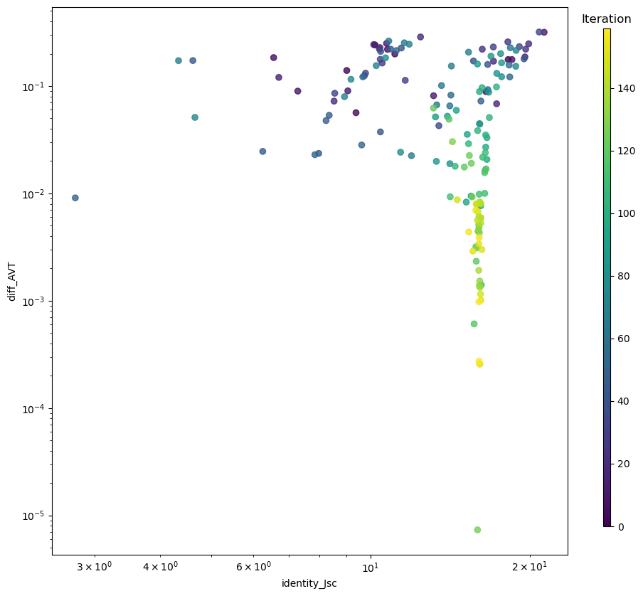
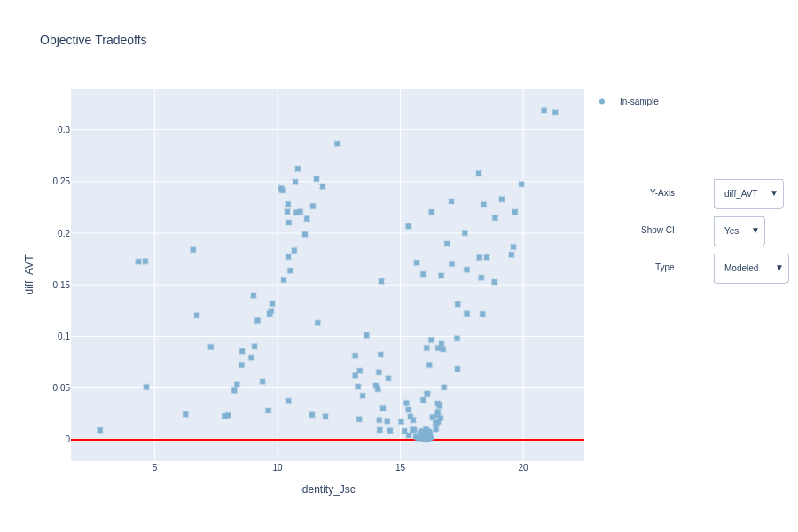
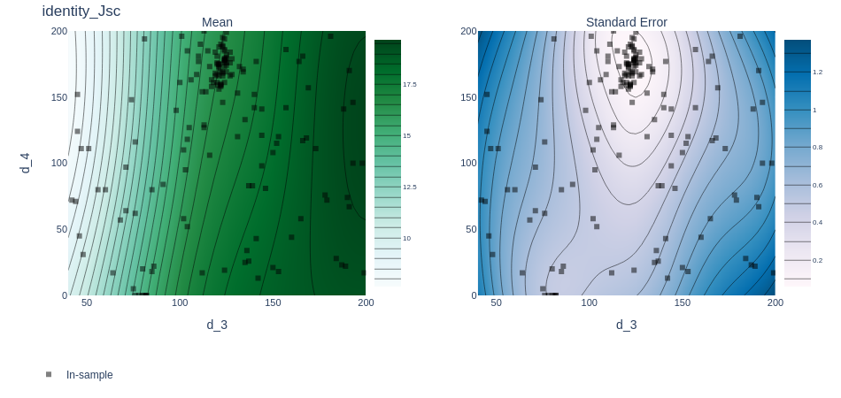
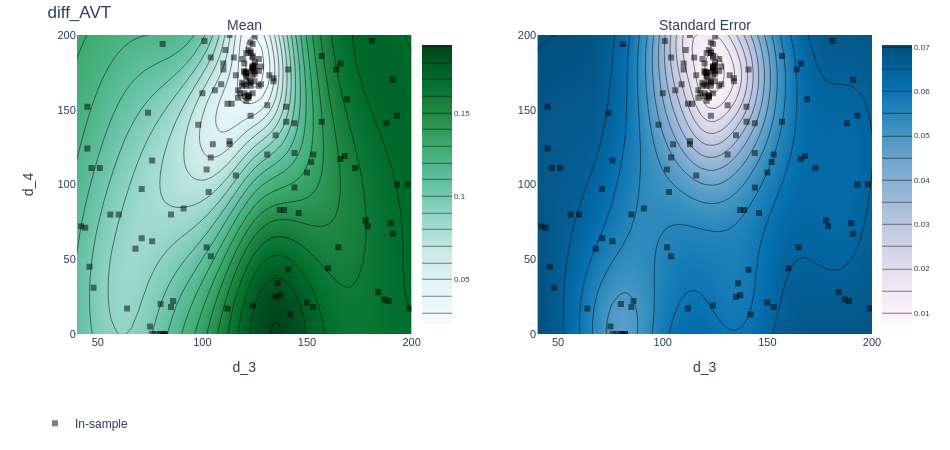
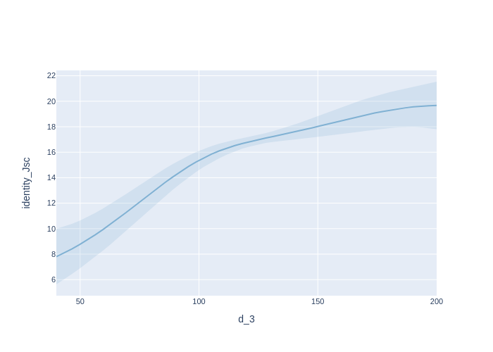
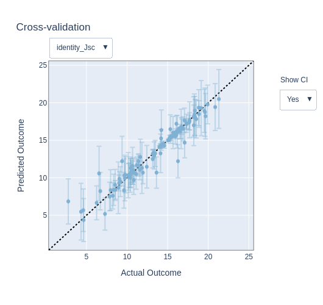
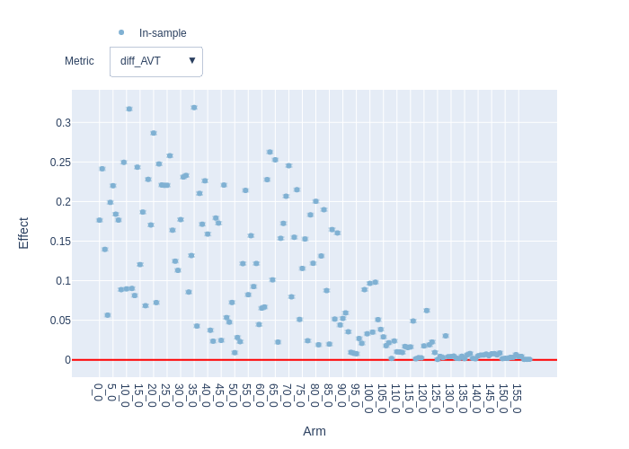
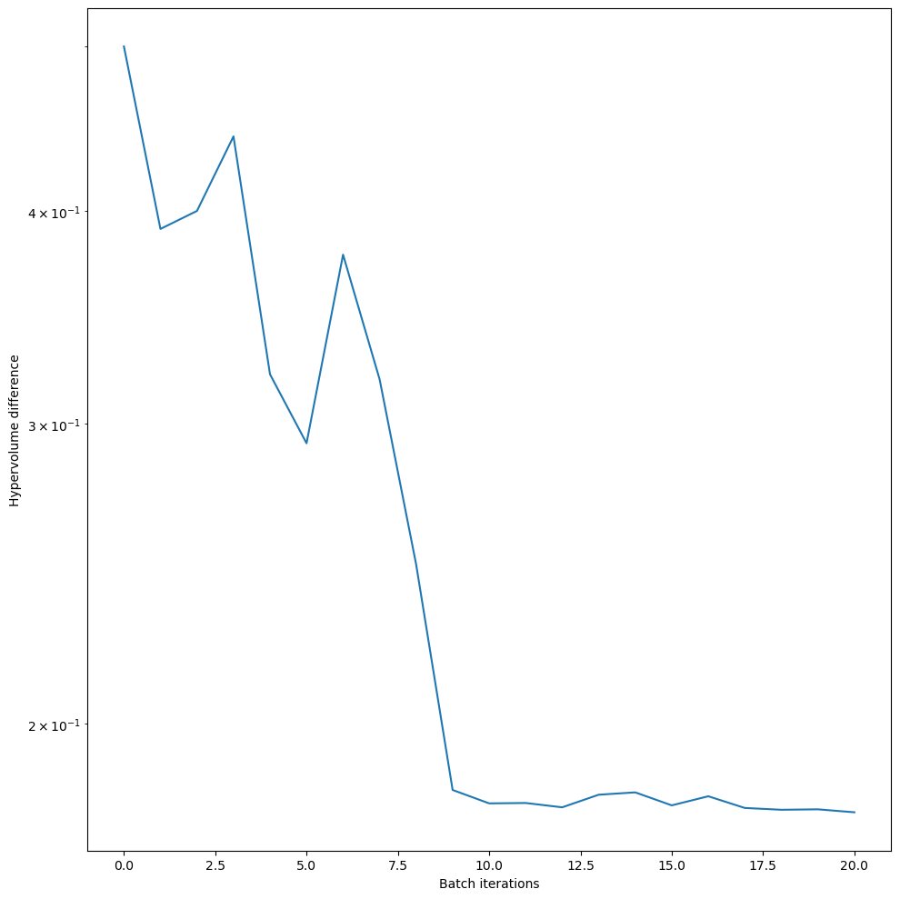
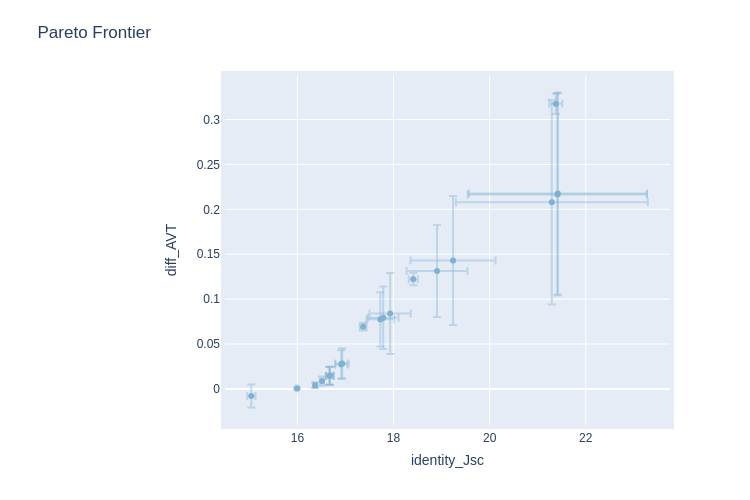

Custom evaluate function for Multi-Objective Optimization - Transfer Matrix example
Version 1.0.0 (c) Vincent M. Le Corre, Larry Lueer, i-MEET 2021-2023
This notebook is made to use BOAR in combination with transfer matrix modeling (TMM) to optimize the thickness of the layers in a multilayer stack to optimize the average visible transmittance (AVT) and maximize the current density (Jsc) of a solar cell.
To perform the transfer matrix modeling we use a modified version of the open-source program devoloped by McGehee’s group (Stanford University) and adapted to python by Kamil Mielczarek (University of Texas).
For more information about the transfer matrix modeling, please refer to the original paper.
Here, we show how to use the custom evaluate function for the optimization which allows to only run the TMM once per iteration and then evaluate the two objectives (AVT and Jsc) making the optimization faster.
[1]:
# Activate matplotlib widgets
# %matplotlib inline
# comment the next line if you are on the jupyterhub server
# %matplotlib widget
# %matplotlib notebook
import plotly.io as pio # comment out to only render png
pio.renderers.default = 'png'
# Import libraries
import sys,os,types
import warnings
warnings.filterwarnings('ignore') # comment this out to see warnings
# Import boar
sys.path.append('../') # comment out if the Notebook is in the Notebooks folder
from boar import *
from boar.core.optimization_botorch import *
# import additional libraries from Ax
from ax.utils.notebook.plotting import render, init_notebook_plotting # for plotting in notebook
from ax.plot.slice import plot_slice
from ax.plot.scatter import interact_fitted,plot_objective_vs_constraints,tile_fitted
from ax.modelbridge.cross_validation import cross_validate
from ax.plot.contour import interact_contour
from ax.plot.diagnostic import interact_cross_validation
from ax.plot.pareto_utils import compute_posterior_pareto_frontier
from ax.plot.pareto_frontier import plot_pareto_frontier
# Import homemade package by VLC
# import boar.SIMsalabim_utils.plot_settings_screen # to set default plot settings
[2]:
# Define the path to the data
curr_dir = os.getcwd() # current directory
res_dir = os.path.join(os.path.abspath('../'),'temp') # path to the results directory
mat_dir = os.path.join(os.path.abspath('../'),'Example_Data/matdata') # path to the mat files directory, comment if not in Notebooks folder
[3]:
# Initialize the agent and default device stack
layers = ['SiOx' , 'ITO' , 'ZnO' , 'PCE10_FOIC_1to1' , 'MoOx' , 'Ag', 'MoOx', 'LiF','MoOx', 'LiF','Air'] # list of layers (need to be the same than the name nk_*.csv file in the matdata folder)
thicknesses = [0 , 100 , 30 , 100 , 9 , 8, 100, 100, 100, 100, 100] # list of thicknesses in nm
tm = Transfer_Matrix_agent(layers=layers, thicknesses=thicknesses,mat_dir=mat_dir) # initialize the agent
Define the free parameters to be optimized
In this notebook, we not only optimize the thickness of the different layers in the stack, but also the material composition of the absorber layer by optimizing the nk values selected by the parameter nk_3.
This can be done by passing a list of names of the materials to the parameter nk_3 in the lims attribute and by choosing the value_type of the FitParam object as ‘str’. We also limit the resolution of the thickness to 1 nm by optimizing the thicknesses values as integers (value_type=’int’).
[4]:
params = []
d_3 = Fitparam(name = 'd_3', val = 80, lims = [40, 200], relRange = 1, range_type = 'lin',
lim_type = 'absolute',optim_type='lin', display_name = 'AL thickness', unit = 'nm',val_type='int')
params.append(d_3)
d_4 = Fitparam(name = 'd_4', val = 100, lims = [0, 200], relRange = 1, range_type = 'lin',
lim_type = 'absolute',optim_type='lin', display_name = 'MoOx 1 thickness', unit = 'nm',val_type='int')
params.append(d_4)
d_5 = Fitparam(name = 'd_5', val = 10, lims = [0, 15], relRange = 1, range_type = 'lin',
lim_type = 'absolute',optim_type='lin', display_name = 'Ag thickness', unit = 'nm',val_type='int')
params.append(d_5)
d_6 = Fitparam(name = 'd_6', val = 100, lims = [0, 200], relRange = 1, range_type = 'lin',
lim_type = 'absolute',optim_type='lin', display_name = 'MoOx 2 thickness', unit = 'nm',val_type='int')
params.append(d_6)
d_7 = Fitparam(name = 'd_7', val = 10, lims = [0, 200], relRange = 1, range_type = 'lin',
lim_type = 'absolute',optim_type='lin', display_name = 'LiF 1 thickness', unit = 'nm',val_type='int')
params.append(d_7)
d_8 = Fitparam(name = 'd_8', val = 100, lims = [0, 200], relRange = 1, range_type = 'lin',
lim_type = 'absolute',optim_type='lin', display_name = 'MoOx 3 thickness', unit = 'nm',val_type='int')
params.append(d_8)
d_9 = Fitparam(name = 'd_9', val = 10, lims = [0, 200], relRange = 0, range_type = 'lin',
lim_type = 'absolute',optim_type='lin', display_name = 'LiF 2 thickness', unit = 'nm',val_type='int')
params.append(d_9)
nk_3 = Fitparam(name = 'nk_3', val = 'PCE10_FOIC_1to1', lims = ['PCE10_FOIC_1to1','P3HTPCBM_BHJ','PM6Y6Brabec'], relRange = 0.5, range_type = 'lin',
lim_type = 'absolute',optim_type='lin', display_name = 'AL nk', unit = '',val_type='str')
params.append(nk_3)
[5]:
# run the model on the default stack configuration
X = [0] # we need to provide a list of inputs even if it is not used later
print('Jsc = ', tm.TM(X,params,output=['Jsc'],is_MOO=False))
print('LUE = ', tm.TM(X,params,output=['LUE'],is_MOO=False))
print('AVT = ', tm.TM(X,params,output=['AVT'],is_MOO=False))
Jsc = 10.53248308747983
LUE = 3.5542800166757664
AVT = 0.337458886679895
Start the optimization
Here, we use the custom evaluation function since both targets are outputted by the same model. This allows us to call the model only once per sample and saves calculation time.
[6]:
# We create a new class that inherits from the MooBOtorch class, this is necessary to be able to write a custom evaluation function that can be ran in parallel
class customMooBOtorch(MooBOtorch):
def __init__(self,params = None, targets = None, parameter_constraints = None, warmstart = None, Path2OldXY = None, SaveOldXY2file = None, res_dir = 'temp', use_evaluate_custom = None, parallel = True, verbose = False) -> None:
"""Initialization routine
Parameters
----------
targets : list of dict, optional
List of Dictionaries with the following keys:\\
'model': a pointer to a function y = f(X) where X has m dimensions\\
'data': dictionary with keys\\
'X':ndarray with shape (n,m) where n is the number of evaluations for X \\
'y':ndarray with shape (n,)\\
'X_dimensions': list of string: the names of the dimensions in X\\
'X_units': list of string: the units of the dimensions in X\\
'y_dimension': string: the name of the dimension y\\
'y_unit': string: the unit of the dimension y\\
'params': list of Fitparam() objects, by default None\\
warmstart : str, optional
'None', 'collect', 'collect_init', 'collect_BO', 'recall' or 'collect&recall', by default None\\
if 'None' does not store results\\
if 'collect' stores all results\\
if 'collect_init' stores results from the initial sampling only. NOTE: In reality it collects the n_jobs*(n_initial_points + n_BO)/n_initial_points first point, so you may get some of the first few BO points depending on n_jobs\\
if collect_BO' stores results from the Bayesian Optimization only\\
if 'recall' recalls results\\
if 'collect&recall' stores and recalls results\\
Path2OldXY : str, optional
full path to the json file containing the self.old_xy results to be loaded, by default None
SaveOldXY2file : str, optional
full path to the json file where the new self.old_xy results will be saved if it is None then we do not save the data, by default None
res_dir : str, optional
directory where the results will be saved, by default 'temp'
evaluate_custom : function, optional
use a custom evaluation function instead of the default one, this is useful when the same model is used for different targets, by default None
parallel : bool, optional
use parallelization, if False n_jobs can still be > 1 but the evaluation will be done sequentially, by default True
verbose : bool, optional
print some information, by default False
"""
if targets != None:
self.targets = targets
if params != None:
self.params = params
if parameter_constraints != None:
self.parameter_constraints = parameter_constraints
else:
self.parameter_constraints = None
self.warmstart = warmstart # want to re-use expensive calculations from a previous run?
if self.warmstart == None:
self.warmstart = 'None'
self.old_xy = {'ydyn':1,'x':[],'y':[]} # dict to hold the calculations from a previous run if warmstart==True
self.Path2OldXY = Path2OldXY
self.SaveOldXY2file = SaveOldXY2file # path to file where we want to save the old_xy data
self.verbose = verbose
self.res_dir = res_dir
if not os.path.exists(self.res_dir):
os.makedirs(self.res_dir)
self.cwd = os.getcwd()
self.use_evaluate_custom = use_evaluate_custom
self.parallel = parallel
def evaluate_custom(self,px,obj_type,loss,threshold=1,is_MOO=True):
"""Custom evaluation function that can be used instead of the default one
Parameters
----------
px : list
list of parameters values
obj_type : str
type of objective function to be used, see self.obj_func_metric
loss : str
loss function to be used, see self.lossfunc
threshold : float, optional
threshold for the loss function, by default 1
is_MOO : bool, optional
whether to use multi-objective optimization or enforce single-objective optimization, by default False
Returns
-------
dict
dictionary with the results, the keys are the names of the targets
"""
pnames = [p.name for p in self.params if p.relRange != 0]
target_names = [t['target_name'] for t in self.targets]
px_ = [px[pnames[i]] for i in range(len(pnames))]
self.params_w(px_,self.params)
model = self.targets[0]['model']
X = self.targets[0]['data']['X']
res_dum = model(X,self.params) # evaluate the model only once
res = {}
for t in self.targets:
dum = res_dum[t['target_name']]
if 'obj_type' in t.keys():
obj_dum = t['obj_type']
else:
obj_dum = obj_type
if 'loss' in t.keys():
loss_dum = t['loss']
else:
loss_dum = loss
z = self.obj_func_metric(t,dum,obj_type=obj_dum)
res[obj_dum+'_'+t['target_name']] = self.lossfunc(z,loss_dum,threshold=1) # threshold is set to 1 as we don't need it for MOO and if it is a list it will not work
return res
[7]:
# Define the targets and the model for the TM problem
X_dimensions = ['_']
y_dimension = 'J'
target = {'model':partial(tm.TM,output=['Jsc'],is_MOO=True),'target_name':'Jsc','minimize':False,
'data':{'X':X,'y':[0],'X_dimensions':X_dimensions,'X_units':['s',''],'y_dimension':y_dimension,'y_unit':''}
,'target_weight':1, 'weight':1}
y_dimension = 'AVT'
target2 = {'model':partial(tm.TM,output=['AVT'],is_MOO=True),'target_name':'AVT','minimize':True,'obj_type':'diff',
'data':{'X':X,'y':[0.4],'X_dimensions':X_dimensions,'X_units':['s',''],'y_dimension':y_dimension,'y_unit':''}
,'target_weight':1, 'weight':1}
targets = [target,target2]
obj_type='identity'
loss='linear'
threshold=[10,0.05]
mo = customMooBOtorch(params=params, targets= targets,parallel=True) # initialize the custom optimization object
ax_client = mo.BoTorchOpti(n_jobs=[80,4], n_step_points = [80, 80], models=['Sobol','MOO'],obj_type=obj_type,loss=loss,threshold=threshold,use_CUDA=True,is_MOO=True,verbose=True,show_posterior=False,kwargs_posterior={},use_custom_func=True)
[INFO 01-18 09:15:56] ax.service.ax_client: Starting optimization with verbose logging. To disable logging, set the `verbose_logging` argument to `False`. Note that float values in the logs are rounded to 6 decimal points.
[INFO 01-18 09:15:56] ax.service.utils.instantiation: Created search space: SearchSpace(parameters=[RangeParameter(name='d_3', parameter_type=INT, range=[40, 200]), RangeParameter(name='d_4', parameter_type=INT, range=[0, 200]), RangeParameter(name='d_5', parameter_type=INT, range=[0, 15]), RangeParameter(name='d_6', parameter_type=INT, range=[0, 200]), RangeParameter(name='d_7', parameter_type=INT, range=[0, 200]), RangeParameter(name='d_8', parameter_type=INT, range=[0, 200]), ChoiceParameter(name='nk_3', parameter_type=STRING, values=['PCE10_FOIC_1to1', 'P3HTPCBM_BHJ', 'PM6Y6Brabec'], is_ordered=False, sort_values=False)], parameter_constraints=[]).
[INFO 01-18 09:15:56] ax.service.ax_client: Generated new trial 0 with parameters {'d_3': 166, 'd_4': 117, 'd_5': 7, 'd_6': 1, 'd_7': 146, 'd_8': 1, 'nk_3': 'PCE10_FOIC_1to1'}.
[INFO 01-18 09:15:56] ax.service.ax_client: Generated new trial 1 with parameters {'d_3': 144, 'd_4': 98, 'd_5': 4, 'd_6': 103, 'd_7': 122, 'd_8': 183, 'nk_3': 'P3HTPCBM_BHJ'}.
[INFO 01-18 09:15:56] ax.service.ax_client: Generated new trial 2 with parameters {'d_3': 112, 'd_4': 154, 'd_5': 15, 'd_6': 162, 'd_7': 82, 'd_8': 141, 'nk_3': 'P3HTPCBM_BHJ'}.
[INFO 01-18 09:15:56] ax.service.ax_client: Generated new trial 3 with parameters {'d_3': 68, 'd_4': 57, 'd_5': 8, 'd_6': 199, 'd_7': 10, 'd_8': 157, 'nk_3': 'PCE10_FOIC_1to1'}.
[INFO 01-18 09:15:56] ax.service.ax_client: Generated new trial 4 with parameters {'d_3': 191, 'd_4': 67, 'd_5': 1, 'd_6': 137, 'd_7': 189, 'd_8': 95, 'nk_3': 'P3HTPCBM_BHJ'}.
[INFO 01-18 09:15:56] ax.service.ax_client: Generated new trial 5 with parameters {'d_3': 165, 'd_4': 58, 'd_5': 8, 'd_6': 115, 'd_7': 172, 'd_8': 187, 'nk_3': 'P3HTPCBM_BHJ'}.
[INFO 01-18 09:15:56] ax.service.ax_client: Generated new trial 6 with parameters {'d_3': 47, 'd_4': 111, 'd_5': 4, 'd_6': 85, 'd_7': 51, 'd_8': 36, 'nk_3': 'PCE10_FOIC_1to1'}.
[INFO 01-18 09:15:56] ax.service.ax_client: Generated new trial 7 with parameters {'d_3': 166, 'd_4': 181, 'd_5': 10, 'd_6': 185, 'd_7': 66, 'd_8': 200, 'nk_3': 'PCE10_FOIC_1to1'}.
[INFO 01-18 09:15:56] ax.service.ax_client: Generated new trial 8 with parameters {'d_3': 140, 'd_4': 152, 'd_5': 3, 'd_6': 39, 'd_7': 181, 'd_8': 80, 'nk_3': 'PCE10_FOIC_1to1'}.
[INFO 01-18 09:15:56] ax.service.ax_client: Generated new trial 9 with parameters {'d_3': 152, 'd_4': 115, 'd_5': 11, 'd_6': 67, 'd_7': 196, 'd_8': 55, 'nk_3': 'P3HTPCBM_BHJ'}.
[INFO 01-18 09:15:56] ax.service.ax_client: Generated new trial 10 with parameters {'d_3': 71, 'd_4': 97, 'd_5': 15, 'd_6': 200, 'd_7': 123, 'd_8': 160, 'nk_3': 'P3HTPCBM_BHJ'}.
[INFO 01-18 09:15:56] ax.service.ax_client: Generated new trial 11 with parameters {'d_3': 188, 'd_4': 141, 'd_5': 7, 'd_6': 124, 'd_7': 142, 'd_8': 45, 'nk_3': 'PM6Y6Brabec'}.
[INFO 01-18 09:15:56] ax.service.ax_client: Generated new trial 12 with parameters {'d_3': 60, 'd_4': 80, 'd_5': 8, 'd_6': 160, 'd_7': 93, 'd_8': 50, 'nk_3': 'PM6Y6Brabec'}.
[INFO 01-18 09:15:56] ax.service.ax_client: Generated new trial 13 with parameters {'d_3': 91, 'd_4': 84, 'd_5': 4, 'd_6': 29, 'd_7': 140, 'd_8': 102, 'nk_3': 'PCE10_FOIC_1to1'}.
[INFO 01-18 09:15:56] ax.service.ax_client: Generated new trial 14 with parameters {'d_3': 135, 'd_4': 133, 'd_5': 13, 'd_6': 22, 'd_7': 56, 'd_8': 83, 'nk_3': 'P3HTPCBM_BHJ'}.
[INFO 01-18 09:15:56] ax.service.ax_client: Generated new trial 15 with parameters {'d_3': 45, 'd_4': 124, 'd_5': 0, 'd_6': 110, 'd_7': 117, 'd_8': 128, 'nk_3': 'PM6Y6Brabec'}.
[INFO 01-18 09:15:56] ax.service.ax_client: Generated new trial 16 with parameters {'d_3': 198, 'd_4': 100, 'd_5': 14, 'd_6': 84, 'd_7': 17, 'd_8': 53, 'nk_3': 'PCE10_FOIC_1to1'}.
[INFO 01-18 09:15:56] ax.service.ax_client: Generated new trial 17 with parameters {'d_3': 150, 'd_4': 108, 'd_5': 3, 'd_6': 23, 'd_7': 83, 'd_8': 131, 'nk_3': 'PCE10_FOIC_1to1'}.
[INFO 01-18 09:15:56] ax.service.ax_client: Generated new trial 18 with parameters {'d_3': 144, 'd_4': 121, 'd_5': 14, 'd_6': 147, 'd_7': 90, 'd_8': 146, 'nk_3': 'P3HTPCBM_BHJ'}.
[INFO 01-18 09:15:57] ax.service.ax_client: Generated new trial 19 with parameters {'d_3': 104, 'd_4': 118, 'd_5': 8, 'd_6': 0, 'd_7': 98, 'd_8': 110, 'nk_3': 'PM6Y6Brabec'}.
[INFO 01-18 09:15:57] ax.service.ax_client: Generated new trial 20 with parameters {'d_3': 189, 'd_4': 22, 'd_5': 14, 'd_6': 66, 'd_7': 102, 'd_8': 198, 'nk_3': 'P3HTPCBM_BHJ'}.
[INFO 01-18 09:15:57] ax.service.ax_client: Generated new trial 21 with parameters {'d_3': 112, 'd_4': 17, 'd_5': 3, 'd_6': 164, 'd_7': 164, 'd_8': 18, 'nk_3': 'P3HTPCBM_BHJ'}.
[INFO 01-18 09:15:57] ax.service.ax_client: Generated new trial 22 with parameters {'d_3': 157, 'd_4': 186, 'd_5': 9, 'd_6': 111, 'd_7': 21, 'd_8': 148, 'nk_3': 'PM6Y6Brabec'}.
[INFO 01-18 09:15:57] ax.service.ax_client: Generated new trial 23 with parameters {'d_3': 128, 'd_4': 179, 'd_5': 12, 'd_6': 65, 'd_7': 178, 'd_8': 28, 'nk_3': 'P3HTPCBM_BHJ'}.
[INFO 01-18 09:15:57] ax.service.ax_client: Generated new trial 24 with parameters {'d_3': 85, 'd_4': 18, 'd_5': 11, 'd_6': 118, 'd_7': 18, 'd_8': 69, 'nk_3': 'PM6Y6Brabec'}.
[INFO 01-18 09:15:57] ax.service.ax_client: Generated new trial 25 with parameters {'d_3': 199, 'd_4': 17, 'd_5': 3, 'd_6': 198, 'd_7': 53, 'd_8': 56, 'nk_3': 'PCE10_FOIC_1to1'}.
[INFO 01-18 09:15:57] ax.service.ax_client: Generated new trial 26 with parameters {'d_3': 131, 'd_4': 120, 'd_5': 4, 'd_6': 182, 'd_7': 137, 'd_8': 168, 'nk_3': 'PM6Y6Brabec'}.
[INFO 01-18 09:15:57] ax.service.ax_client: Generated new trial 27 with parameters {'d_3': 169, 'd_4': 157, 'd_5': 2, 'd_6': 125, 'd_7': 135, 'd_8': 106, 'nk_3': 'P3HTPCBM_BHJ'}.
[INFO 01-18 09:15:57] ax.service.ax_client: Generated new trial 28 with parameters {'d_3': 157, 'd_4': 142, 'd_5': 0, 'd_6': 180, 'd_7': 62, 'd_8': 2, 'nk_3': 'P3HTPCBM_BHJ'}.
[INFO 01-18 09:15:57] ax.service.ax_client: Generated new trial 29 with parameters {'d_3': 76, 'd_4': 116, 'd_5': 5, 'd_6': 41, 'd_7': 33, 'd_8': 50, 'nk_3': 'PM6Y6Brabec'}.
[INFO 01-18 09:15:57] ax.service.ax_client: Generated new trial 30 with parameters {'d_3': 153, 'd_4': 18, 'd_5': 12, 'd_6': 36, 'd_7': 170, 'd_8': 162, 'nk_3': 'P3HTPCBM_BHJ'}.
[INFO 01-18 09:15:57] ax.service.ax_client: Generated new trial 31 with parameters {'d_3': 116, 'd_4': 106, 'd_5': 10, 'd_6': 130, 'd_7': 58, 'd_8': 135, 'nk_3': 'PM6Y6Brabec'}.
[INFO 01-18 09:15:57] ax.service.ax_client: Generated new trial 32 with parameters {'d_3': 142, 'd_4': 13, 'd_5': 0, 'd_6': 117, 'd_7': 170, 'd_8': 47, 'nk_3': 'PM6Y6Brabec'}.
[INFO 01-18 09:15:57] ax.service.ax_client: Generated new trial 33 with parameters {'d_3': 105, 'd_4': 127, 'd_5': 9, 'd_6': 138, 'd_7': 92, 'd_8': 120, 'nk_3': 'P3HTPCBM_BHJ'}.
[INFO 01-18 09:15:57] ax.service.ax_client: Generated new trial 34 with parameters {'d_3': 146, 'd_4': 81, 'd_5': 7, 'd_6': 188, 'd_7': 184, 'd_8': 3, 'nk_3': 'P3HTPCBM_BHJ'}.
[INFO 01-18 09:15:57] ax.service.ax_client: Generated new trial 35 with parameters {'d_3': 181, 'd_4': 196, 'd_5': 12, 'd_6': 154, 'd_7': 76, 'd_8': 186, 'nk_3': 'PM6Y6Brabec'}.
[INFO 01-18 09:15:57] ax.service.ax_client: Generated new trial 36 with parameters {'d_3': 75, 'd_4': 5, 'd_5': 6, 'd_6': 65, 'd_7': 181, 'd_8': 58, 'nk_3': 'PCE10_FOIC_1to1'}.
[INFO 01-18 09:15:57] ax.service.ax_client: Generated new trial 37 with parameters {'d_3': 153, 'd_4': 120, 'd_5': 12, 'd_6': 198, 'd_7': 83, 'd_8': 175, 'nk_3': 'P3HTPCBM_BHJ'}.
[INFO 01-18 09:15:57] ax.service.ax_client: Generated new trial 38 with parameters {'d_3': 98, 'd_4': 140, 'd_5': 7, 'd_6': 43, 'd_7': 137, 'd_8': 33, 'nk_3': 'PM6Y6Brabec'}.
[INFO 01-18 09:15:57] ax.service.ax_client: Generated new trial 39 with parameters {'d_3': 193, 'd_4': 100, 'd_5': 5, 'd_6': 129, 'd_7': 101, 'd_8': 143, 'nk_3': 'P3HTPCBM_BHJ'}.
[INFO 01-18 09:15:57] ax.service.ax_client: Generated new trial 40 with parameters {'d_3': 113, 'd_4': 129, 'd_5': 3, 'd_6': 199, 'd_7': 31, 'd_8': 153, 'nk_3': 'PM6Y6Brabec'}.
[INFO 01-18 09:15:57] ax.service.ax_client: Generated new trial 41 with parameters {'d_3': 71, 'd_4': 64, 'd_5': 6, 'd_6': 116, 'd_7': 97, 'd_8': 15, 'nk_3': 'PM6Y6Brabec'}.
[INFO 01-18 09:15:57] ax.service.ax_client: Generated new trial 42 with parameters {'d_3': 100, 'd_4': 161, 'd_5': 3, 'd_6': 44, 'd_7': 116, 'd_8': 18, 'nk_3': 'P3HTPCBM_BHJ'}.
[INFO 01-18 09:15:57] ax.service.ax_client: Generated new trial 43 with parameters {'d_3': 193, 'd_4': 146, 'd_5': 10, 'd_6': 125, 'd_7': 185, 'd_8': 53, 'nk_3': 'PCE10_FOIC_1to1'}.
[INFO 01-18 09:15:57] ax.service.ax_client: Generated new trial 44 with parameters {'d_3': 51, 'd_4': 111, 'd_5': 7, 'd_6': 138, 'd_7': 39, 'd_8': 13, 'nk_3': 'P3HTPCBM_BHJ'}.
[INFO 01-18 09:15:58] ax.service.ax_client: Generated new trial 45 with parameters {'d_3': 76, 'd_4': 62, 'd_5': 5, 'd_6': 169, 'd_7': 44, 'd_8': 86, 'nk_3': 'P3HTPCBM_BHJ'}.
[INFO 01-18 09:15:58] ax.service.ax_client: Generated new trial 46 with parameters {'d_3': 168, 'd_4': 119, 'd_5': 6, 'd_6': 140, 'd_7': 108, 'd_8': 153, 'nk_3': 'P3HTPCBM_BHJ'}.
[INFO 01-18 09:15:58] ax.service.ax_client: Generated new trial 47 with parameters {'d_3': 101, 'd_4': 196, 'd_5': 13, 'd_6': 167, 'd_7': 18, 'd_8': 122, 'nk_3': 'P3HTPCBM_BHJ'}.
[INFO 01-18 09:15:58] ax.service.ax_client: Generated new trial 48 with parameters {'d_3': 103, 'd_4': 95, 'd_5': 1, 'd_6': 146, 'd_7': 161, 'd_8': 81, 'nk_3': 'P3HTPCBM_BHJ'}.
[INFO 01-18 09:15:58] ax.service.ax_client: Generated new trial 49 with parameters {'d_3': 135, 'd_4': 25, 'd_5': 6, 'd_6': 27, 'd_7': 4, 'd_8': 21, 'nk_3': 'PCE10_FOIC_1to1'}.
[INFO 01-18 09:15:58] ax.service.ax_client: Generated new trial 50 with parameters {'d_3': 44, 'd_4': 71, 'd_5': 12, 'd_6': 194, 'd_7': 198, 'd_8': 177, 'nk_3': 'P3HTPCBM_BHJ'}.
[INFO 01-18 09:15:58] ax.service.ax_client: Generated new trial 51 with parameters {'d_3': 56, 'd_4': 80, 'd_5': 0, 'd_6': 83, 'd_7': 177, 'd_8': 80, 'nk_3': 'PM6Y6Brabec'}.
[INFO 01-18 09:15:58] ax.service.ax_client: Generated new trial 52 with parameters {'d_3': 42, 'd_4': 72, 'd_5': 12, 'd_6': 179, 'd_7': 80, 'd_8': 69, 'nk_3': 'PM6Y6Brabec'}.
[INFO 01-18 09:15:58] ax.service.ax_client: Generated new trial 53 with parameters {'d_3': 179, 'd_4': 72, 'd_5': 4, 'd_6': 67, 'd_7': 58, 'd_8': 149, 'nk_3': 'PCE10_FOIC_1to1'}.
[INFO 01-18 09:15:58] ax.service.ax_client: Generated new trial 54 with parameters {'d_3': 184, 'd_4': 28, 'd_5': 9, 'd_6': 157, 'd_7': 140, 'd_8': 89, 'nk_3': 'P3HTPCBM_BHJ'}.
[INFO 01-18 09:15:58] ax.service.ax_client: Generated new trial 55 with parameters {'d_3': 104, 'd_4': 52, 'd_5': 5, 'd_6': 54, 'd_7': 125, 'd_8': 164, 'nk_3': 'PCE10_FOIC_1to1'}.
[INFO 01-18 09:15:58] ax.service.ax_client: Generated new trial 56 with parameters {'d_3': 173, 'd_4': 111, 'd_5': 2, 'd_6': 192, 'd_7': 192, 'd_8': 25, 'nk_3': 'PCE10_FOIC_1to1'}.
[INFO 01-18 09:15:58] ax.service.ax_client: Generated new trial 57 with parameters {'d_3': 131, 'd_4': 153, 'd_5': 12, 'd_6': 33, 'd_7': 98, 'd_8': 168, 'nk_3': 'PCE10_FOIC_1to1'}.
[INFO 01-18 09:15:58] ax.service.ax_client: Generated new trial 58 with parameters {'d_3': 141, 'd_4': 43, 'd_5': 7, 'd_6': 21, 'd_7': 181, 'd_8': 29, 'nk_3': 'P3HTPCBM_BHJ'}.
[INFO 01-18 09:15:58] ax.service.ax_client: Generated new trial 59 with parameters {'d_3': 139, 'd_4': 83, 'd_5': 4, 'd_6': 87, 'd_7': 85, 'd_8': 12, 'nk_3': 'PCE10_FOIC_1to1'}.
[INFO 01-18 09:15:59] ax.service.ax_client: Generated new trial 60 with parameters {'d_3': 86, 'd_4': 22, 'd_5': 2, 'd_6': 140, 'd_7': 66, 'd_8': 152, 'nk_3': 'PM6Y6Brabec'}.
[INFO 01-18 09:15:59] ax.service.ax_client: Generated new trial 61 with parameters {'d_3': 81, 'd_4': 194, 'd_5': 12, 'd_6': 68, 'd_7': 199, 'd_8': 163, 'nk_3': 'PCE10_FOIC_1to1'}.
[INFO 01-18 09:15:59] ax.service.ax_client: Generated new trial 62 with parameters {'d_3': 113, 'd_4': 127, 'd_5': 13, 'd_6': 135, 'd_7': 154, 'd_8': 43, 'nk_3': 'PM6Y6Brabec'}.
[INFO 01-18 09:15:59] ax.service.ax_client: Generated new trial 63 with parameters {'d_3': 136, 'd_4': 34, 'd_5': 11, 'd_6': 108, 'd_7': 149, 'd_8': 39, 'nk_3': 'P3HTPCBM_BHJ'}.
[INFO 01-18 09:15:59] ax.service.ax_client: Generated new trial 64 with parameters {'d_3': 74, 'd_4': 148, 'd_5': 7, 'd_6': 171, 'd_7': 147, 'd_8': 30, 'nk_3': 'PM6Y6Brabec'}.
[INFO 01-18 09:15:59] ax.service.ax_client: Generated new trial 65 with parameters {'d_3': 187, 'd_4': 23, 'd_5': 8, 'd_6': 187, 'd_7': 96, 'd_8': 87, 'nk_3': 'P3HTPCBM_BHJ'}.
[INFO 01-18 09:15:59] ax.service.ax_client: Generated new trial 66 with parameters {'d_3': 64, 'd_4': 17, 'd_5': 3, 'd_6': 99, 'd_7': 161, 'd_8': 182, 'nk_3': 'PCE10_FOIC_1to1'}.
[INFO 01-18 09:15:59] ax.service.ax_client: Generated new trial 67 with parameters {'d_3': 102, 'd_4': 58, 'd_5': 11, 'd_6': 36, 'd_7': 138, 'd_8': 174, 'nk_3': 'PM6Y6Brabec'}.
[INFO 01-18 09:15:59] ax.service.ax_client: Generated new trial 68 with parameters {'d_3': 48, 'd_4': 31, 'd_5': 1, 'd_6': 43, 'd_7': 194, 'd_8': 130, 'nk_3': 'P3HTPCBM_BHJ'}.
[INFO 01-18 09:15:59] ax.service.ax_client: Generated new trial 69 with parameters {'d_3': 102, 'd_4': 110, 'd_5': 14, 'd_6': 60, 'd_7': 39, 'd_8': 113, 'nk_3': 'PM6Y6Brabec'}.
[INFO 01-18 09:15:59] ax.service.ax_client: Generated new trial 70 with parameters {'d_3': 191, 'd_4': 170, 'd_5': 14, 'd_6': 197, 'd_7': 24, 'd_8': 78, 'nk_3': 'P3HTPCBM_BHJ'}.
[INFO 01-18 09:15:59] ax.service.ax_client: Generated new trial 71 with parameters {'d_3': 45, 'd_4': 152, 'd_5': 14, 'd_6': 193, 'd_7': 76, 'd_8': 129, 'nk_3': 'PCE10_FOIC_1to1'}.
[INFO 01-18 09:15:59] ax.service.ax_client: Generated new trial 72 with parameters {'d_3': 160, 'd_4': 44, 'd_5': 7, 'd_6': 28, 'd_7': 152, 'd_8': 112, 'nk_3': 'P3HTPCBM_BHJ'}.
[INFO 01-18 09:15:59] ax.service.ax_client: Generated new trial 73 with parameters {'d_3': 164, 'd_4': 177, 'd_5': 11, 'd_6': 86, 'd_7': 65, 'd_8': 177, 'nk_3': 'PCE10_FOIC_1to1'}.
[INFO 01-18 09:16:00] ax.service.ax_client: Generated new trial 74 with parameters {'d_3': 46, 'd_4': 45, 'd_5': 6, 'd_6': 86, 'd_7': 150, 'd_8': 24, 'nk_3': 'P3HTPCBM_BHJ'}.
[INFO 01-18 09:16:00] ax.service.ax_client: Generated new trial 75 with parameters {'d_3': 123, 'd_4': 146, 'd_5': 9, 'd_6': 149, 'd_7': 193, 'd_8': 137, 'nk_3': 'P3HTPCBM_BHJ'}.
[INFO 01-18 09:16:00] ax.service.ax_client: Generated new trial 76 with parameters {'d_3': 190, 'd_4': 74, 'd_5': 3, 'd_6': 186, 'd_7': 47, 'd_8': 158, 'nk_3': 'PCE10_FOIC_1to1'}.
[INFO 01-18 09:16:00] ax.service.ax_client: Generated new trial 77 with parameters {'d_3': 85, 'd_4': 80, 'd_5': 2, 'd_6': 72, 'd_7': 180, 'd_8': 159, 'nk_3': 'PCE10_FOIC_1to1'}.
[INFO 01-18 09:16:00] ax.service.ax_client: Generated new trial 78 with parameters {'d_3': 178, 'd_4': 76, 'd_5': 2, 'd_6': 180, 'd_7': 7, 'd_8': 138, 'nk_3': 'P3HTPCBM_BHJ'}.
[INFO 01-18 09:16:00] ax.service.ax_client: Generated new trial 79 with parameters {'d_3': 150, 'd_4': 21, 'd_5': 12, 'd_6': 15, 'd_7': 25, 'd_8': 117, 'nk_3': 'PCE10_FOIC_1to1'}.
[INFO 01-18 09:16:09] ax.service.ax_client: Completed trial 0 with data: {'identity_Jsc': (18.2198, None), 'diff_AVT': (0.176488, None)}.
[INFO 01-18 09:16:09] ax.service.ax_client: Completed trial 1 with data: {'identity_Jsc': (10.196302, None), 'diff_AVT': (0.241435, None)}.
[INFO 01-18 09:16:09] ax.service.ax_client: Completed trial 2 with data: {'identity_Jsc': (9.016016, None), 'diff_AVT': (0.139593, None)}.
[INFO 01-18 09:16:09] ax.service.ax_client: Completed trial 3 with data: {'identity_Jsc': (9.387147, None), 'diff_AVT': (0.056451, None)}.
[INFO 01-18 09:16:09] ax.service.ax_client: Completed trial 4 with data: {'identity_Jsc': (11.117357, None), 'diff_AVT': (0.198941, None)}.
[INFO 01-18 09:16:09] ax.service.ax_client: Completed trial 5 with data: {'identity_Jsc': (10.767025, None), 'diff_AVT': (0.22002, None)}.
[INFO 01-18 09:16:09] ax.service.ax_client: Completed trial 6 with data: {'identity_Jsc': (6.556204, None), 'diff_AVT': (0.184029, None)}.
[INFO 01-18 09:16:09] ax.service.ax_client: Completed trial 7 with data: {'identity_Jsc': (18.520158, None), 'diff_AVT': (0.176581, None)}.
[INFO 01-18 09:16:09] ax.service.ax_client: Completed trial 8 with data: {'identity_Jsc': (16.540018, None), 'diff_AVT': (0.088693, None)}.
[INFO 01-18 09:16:09] ax.service.ax_client: Completed trial 9 with data: {'identity_Jsc': (10.723894, None), 'diff_AVT': (0.249583, None)}.
[INFO 01-18 09:16:09] ax.service.ax_client: Completed trial 10 with data: {'identity_Jsc': (7.282712, None), 'diff_AVT': (0.089688, None)}.
[INFO 01-18 09:16:09] ax.service.ax_client: Completed trial 11 with data: {'identity_Jsc': (21.308975, None), 'diff_AVT': (0.316978, None)}.
[INFO 01-18 09:16:09] ax.service.ax_client: Completed trial 12 with data: {'identity_Jsc': (9.058054, None), 'diff_AVT': (0.090226, None)}.
[INFO 01-18 09:16:09] ax.service.ax_client: Completed trial 13 with data: {'identity_Jsc': (13.162369, None), 'diff_AVT': (0.081263, None)}.
[INFO 01-18 09:16:09] ax.service.ax_client: Completed trial 14 with data: {'identity_Jsc': (10.142888, None), 'diff_AVT': (0.243426, None)}.
[INFO 01-18 09:16:09] ax.service.ax_client: Completed trial 15 with data: {'identity_Jsc': (6.705191, None), 'diff_AVT': (0.120397, None)}.
[INFO 01-18 09:16:09] ax.service.ax_client: Completed trial 16 with data: {'identity_Jsc': (19.601335, None), 'diff_AVT': (0.186713, None)}.
[INFO 01-18 09:16:09] ax.service.ax_client: Completed trial 17 with data: {'identity_Jsc': (17.323506, None), 'diff_AVT': (0.068384, None)}.
[INFO 01-18 09:16:09] ax.service.ax_client: Completed trial 18 with data: {'identity_Jsc': (10.420283, None), 'diff_AVT': (0.228032, None)}.
[INFO 01-18 09:16:09] ax.service.ax_client: Completed trial 19 with data: {'identity_Jsc': (17.092969, None), 'diff_AVT': (0.170395, None)}.
[INFO 01-18 09:16:09] ax.service.ax_client: Completed trial 20 with data: {'identity_Jsc': (12.434496, None), 'diff_AVT': (0.286521, None)}.
[INFO 01-18 09:16:09] ax.service.ax_client: Completed trial 21 with data: {'identity_Jsc': (8.530936, None), 'diff_AVT': (0.072368, None)}.
[INFO 01-18 09:16:09] ax.service.ax_client: Completed trial 22 with data: {'identity_Jsc': (19.925102, None), 'diff_AVT': (0.247491, None)}.
[INFO 01-18 09:16:09] ax.service.ax_client: Completed trial 23 with data: {'identity_Jsc': (10.395592, None), 'diff_AVT': (0.22092, None)}.
[INFO 01-18 09:16:09] ax.service.ax_client: Completed trial 24 with data: {'identity_Jsc': (16.272806, None), 'diff_AVT': (0.220461, None)}.
[INFO 01-18 09:16:09] ax.service.ax_client: Completed trial 25 with data: {'identity_Jsc': (19.663711, None), 'diff_AVT': (0.220558, None)}.
[INFO 01-18 09:16:09] ax.service.ax_client: Completed trial 26 with data: {'identity_Jsc': (18.193379, None), 'diff_AVT': (0.257914, None)}.
[INFO 01-18 09:16:09] ax.service.ax_client: Completed trial 27 with data: {'identity_Jsc': (10.520949, None), 'diff_AVT': (0.163793, None)}.
[INFO 01-18 09:16:09] ax.service.ax_client: Completed trial 28 with data: {'identity_Jsc': (9.733903, None), 'diff_AVT': (0.12465, None)}.
[INFO 01-18 09:16:09] ax.service.ax_client: Completed trial 29 with data: {'identity_Jsc': (11.633264, None), 'diff_AVT': (0.113072, None)}.
[INFO 01-18 09:16:09] ax.service.ax_client: Completed trial 30 with data: {'identity_Jsc': (10.432319, None), 'diff_AVT': (0.177191, None)}.
[INFO 01-18 09:16:09] ax.service.ax_client: Completed trial 31 with data: {'identity_Jsc': (17.076574, None), 'diff_AVT': (0.231005, None)}.
[INFO 01-18 09:16:09] ax.service.ax_client: Completed trial 32 with data: {'identity_Jsc': (19.129087, None), 'diff_AVT': (0.232981, None)}.
[INFO 01-18 09:16:09] ax.service.ax_client: Completed trial 33 with data: {'identity_Jsc': (8.556356, None), 'diff_AVT': (0.085649, None)}.
[INFO 01-18 09:16:09] ax.service.ax_client: Completed trial 34 with data: {'identity_Jsc': (9.784434, None), 'diff_AVT': (0.131783, None)}.
[INFO 01-18 09:16:09] ax.service.ax_client: Completed trial 35 with data: {'identity_Jsc': (20.851982, None), 'diff_AVT': (0.318794, None)}.
[INFO 01-18 09:16:09] ax.service.ax_client: Completed trial 36 with data: {'identity_Jsc': (13.469106, None), 'diff_AVT': (0.042669, None)}.
[INFO 01-18 09:16:09] ax.service.ax_client: Completed trial 37 with data: {'identity_Jsc': (10.451178, None), 'diff_AVT': (0.210287, None)}.
[INFO 01-18 09:16:09] ax.service.ax_client: Completed trial 38 with data: {'identity_Jsc': (15.66057, None), 'diff_AVT': (0.171382, None)}.
[INFO 01-18 09:16:09] ax.service.ax_client: Completed trial 39 with data: {'identity_Jsc': (11.434804, None), 'diff_AVT': (0.226189, None)}.
[INFO 01-18 09:16:09] ax.service.ax_client: Completed trial 40 with data: {'identity_Jsc': (16.66293, None), 'diff_AVT': (0.158924, None)}.
[INFO 01-18 09:16:09] ax.service.ax_client: Completed trial 41 with data: {'identity_Jsc': (10.439648, None), 'diff_AVT': (0.037377, None)}.
[INFO 01-18 09:16:09] ax.service.ax_client: Completed trial 42 with data: {'identity_Jsc': (7.978164, None), 'diff_AVT': (0.023578, None)}.
[INFO 01-18 09:16:09] ax.service.ax_client: Completed trial 43 with data: {'identity_Jsc': (19.524651, None), 'diff_AVT': (0.17917, None)}.
[INFO 01-18 09:16:09] ax.service.ax_client: Completed trial 44 with data: {'identity_Jsc': (4.610379, None), 'diff_AVT': (0.17278, None)}.
[INFO 01-18 09:16:09] ax.service.ax_client: Completed trial 45 with data: {'identity_Jsc': (6.251883, None), 'diff_AVT': (0.024597, None)}.
[INFO 01-18 09:16:09] ax.service.ax_client: Completed trial 46 with data: {'identity_Jsc': (10.918781, None), 'diff_AVT': (0.220834, None)}.
[INFO 01-18 09:16:09] ax.service.ax_client: Completed trial 47 with data: {'identity_Jsc': (8.350278, None), 'diff_AVT': (0.053402, None)}.
[INFO 01-18 09:16:09] ax.service.ax_client: Completed trial 48 with data: {'identity_Jsc': (8.238707, None), 'diff_AVT': (0.04767, None)}.
[INFO 01-18 09:16:09] ax.service.ax_client: Completed trial 49 with data: {'identity_Jsc': (16.178903, None), 'diff_AVT': (0.072487, None)}.
[INFO 01-18 09:16:10] ax.service.ax_client: Completed trial 50 with data: {'identity_Jsc': (2.762122, None), 'diff_AVT': (0.009081, None)}.
[INFO 01-18 09:16:10] ax.service.ax_client: Completed trial 51 with data: {'identity_Jsc': (9.621587, None), 'diff_AVT': (0.028233, None)}.
[INFO 01-18 09:16:10] ax.service.ax_client: Completed trial 52 with data: {'identity_Jsc': (7.846114, None), 'diff_AVT': (0.022931, None)}.
[INFO 01-18 09:16:10] ax.service.ax_client: Completed trial 53 with data: {'identity_Jsc': (18.345788, None), 'diff_AVT': (0.121601, None)}.
[INFO 01-18 09:16:10] ax.service.ax_client: Completed trial 54 with data: {'identity_Jsc': (11.193563, None), 'diff_AVT': (0.214079, None)}.
[INFO 01-18 09:16:10] ax.service.ax_client: Completed trial 55 with data: {'identity_Jsc': (14.194809, None), 'diff_AVT': (0.082309, None)}.
[INFO 01-18 09:16:10] ax.service.ax_client: Completed trial 56 with data: {'identity_Jsc': (18.293037, None), 'diff_AVT': (0.156878, None)}.
[INFO 01-18 09:16:10] ax.service.ax_client: Completed trial 57 with data: {'identity_Jsc': (16.672999, None), 'diff_AVT': (0.092577, None)}.
[INFO 01-18 09:16:10] ax.service.ax_client: Completed trial 58 with data: {'identity_Jsc': (9.66773, None), 'diff_AVT': (0.121755, None)}.
[INFO 01-18 09:16:10] ax.service.ax_client: Completed trial 59 with data: {'identity_Jsc': (16.07866, None), 'diff_AVT': (0.04461, None)}.
[INFO 01-18 09:16:10] ax.service.ax_client: Completed trial 60 with data: {'identity_Jsc': (14.126166, None), 'diff_AVT': (0.065302, None)}.
[INFO 01-18 09:16:10] ax.service.ax_client: Completed trial 61 with data: {'identity_Jsc': (13.346185, None), 'diff_AVT': (0.066761, None)}.
[INFO 01-18 09:16:10] ax.service.ax_client: Completed trial 62 with data: {'identity_Jsc': (18.389646, None), 'diff_AVT': (0.227713, None)}.
[INFO 01-18 09:16:10] ax.service.ax_client: Completed trial 63 with data: {'identity_Jsc': (10.826106, None), 'diff_AVT': (0.262561, None)}.
[INFO 01-18 09:16:10] ax.service.ax_client: Completed trial 64 with data: {'identity_Jsc': (13.62565, None), 'diff_AVT': (0.101066, None)}.
[INFO 01-18 09:16:10] ax.service.ax_client: Completed trial 65 with data: {'identity_Jsc': (11.586198, None), 'diff_AVT': (0.252753, None)}.
[INFO 01-18 09:16:10] ax.service.ax_client: Completed trial 66 with data: {'identity_Jsc': (11.952017, None), 'diff_AVT': (0.022438, None)}.
[INFO 01-18 09:16:10] ax.service.ax_client: Completed trial 67 with data: {'identity_Jsc': (14.224748, None), 'diff_AVT': (0.153527, None)}.
[INFO 01-18 09:16:10] ax.service.ax_client: Completed trial 68 with data: {'identity_Jsc': (4.330863, None), 'diff_AVT': (0.172422, None)}.
[INFO 01-18 09:16:10] ax.service.ax_client: Completed trial 69 with data: {'identity_Jsc': (15.328504, None), 'diff_AVT': (0.206731, None)}.
[INFO 01-18 09:16:10] ax.service.ax_client: Completed trial 70 with data: {'identity_Jsc': (11.833549, None), 'diff_AVT': (0.245285, None)}.
[INFO 01-18 09:16:10] ax.service.ax_client: Completed trial 71 with data: {'identity_Jsc': (8.928217, None), 'diff_AVT': (0.079613, None)}.
[INFO 01-18 09:16:10] ax.service.ax_client: Completed trial 72 with data: {'identity_Jsc': (10.249941, None), 'diff_AVT': (0.154869, None)}.
[INFO 01-18 09:16:10] ax.service.ax_client: Completed trial 73 with data: {'identity_Jsc': (18.858038, None), 'diff_AVT': (0.214934, None)}.
[INFO 01-18 09:16:10] ax.service.ax_client: Completed trial 74 with data: {'identity_Jsc': (4.652073, None), 'diff_AVT': (0.051038, None)}.
[INFO 01-18 09:16:10] ax.service.ax_client: Completed trial 75 with data: {'identity_Jsc': (9.182928, None), 'diff_AVT': (0.115486, None)}.
[INFO 01-18 09:16:10] ax.service.ax_client: Completed trial 76 with data: {'identity_Jsc': (18.833062, None), 'diff_AVT': (0.152709, None)}.
[INFO 01-18 09:16:10] ax.service.ax_client: Completed trial 77 with data: {'identity_Jsc': (11.397825, None), 'diff_AVT': (0.024177, None)}.
[INFO 01-18 09:16:10] ax.service.ax_client: Completed trial 78 with data: {'identity_Jsc': (10.676916, None), 'diff_AVT': (0.183175, None)}.
[INFO 01-18 09:16:10] ax.service.ax_client: Completed trial 79 with data: {'identity_Jsc': (17.706235, None), 'diff_AVT': (0.122021, None)}.
[INFO 01-18 09:16:17] ax.service.ax_client: Generated new trial 80 with parameters {'d_3': 137, 'd_4': 26, 'd_5': 2, 'd_6': 76, 'd_7': 81, 'd_8': 75, 'nk_3': 'PCE10_FOIC_1to1'}.
[INFO 01-18 09:16:17] ax.modelbridge.torch: The observations are identical to the last set of observations used to fit the model. Skipping model fitting.
[INFO 01-18 09:16:21] ax.service.ax_client: Generated new trial 81 with parameters {'d_3': 81, 'd_4': 0, 'd_5': 6, 'd_6': 120, 'd_7': 189, 'd_8': 142, 'nk_3': 'PCE10_FOIC_1to1'}.
[INFO 01-18 09:16:21] ax.modelbridge.torch: The observations are identical to the last set of observations used to fit the model. Skipping model fitting.
[INFO 01-18 09:16:24] ax.service.ax_client: Generated new trial 82 with parameters {'d_3': 137, 'd_4': 83, 'd_5': 2, 'd_6': 67, 'd_7': 63, 'd_8': 70, 'nk_3': 'PCE10_FOIC_1to1'}.
[INFO 01-18 09:16:24] ax.modelbridge.torch: The observations are identical to the last set of observations used to fit the model. Skipping model fitting.
[INFO 01-18 09:16:26] ax.service.ax_client: Generated new trial 83 with parameters {'d_3': 124, 'd_4': 19, 'd_5': 7, 'd_6': 107, 'd_7': 133, 'd_8': 28, 'nk_3': 'PCE10_FOIC_1to1'}.
[INFO 01-18 09:16:33] ax.service.ax_client: Completed trial 80 with data: {'identity_Jsc': (17.6291, None), 'diff_AVT': (0.200328, None)}.
[INFO 01-18 09:16:33] ax.service.ax_client: Completed trial 81 with data: {'identity_Jsc': (14.132196, None), 'diff_AVT': (0.0189, None)}.
[INFO 01-18 09:16:33] ax.service.ax_client: Completed trial 82 with data: {'identity_Jsc': (17.33772, None), 'diff_AVT': (0.13125, None)}.
[INFO 01-18 09:16:33] ax.service.ax_client: Completed trial 83 with data: {'identity_Jsc': (16.903194, None), 'diff_AVT': (0.189702, None)}.
[INFO 01-18 09:16:43] ax.service.ax_client: Generated new trial 84 with parameters {'d_3': 140, 'd_4': 142, 'd_5': 6, 'd_6': 49, 'd_7': 33, 'd_8': 26, 'nk_3': 'PCE10_FOIC_1to1'}.
[INFO 01-18 09:16:43] ax.modelbridge.torch: The observations are identical to the last set of observations used to fit the model. Skipping model fitting.
[INFO 01-18 09:16:46] ax.service.ax_client: Generated new trial 85 with parameters {'d_3': 76, 'd_4': 0, 'd_5': 7, 'd_6': 69, 'd_7': 200, 'd_8': 161, 'nk_3': 'PCE10_FOIC_1to1'}.
[INFO 01-18 09:16:47] ax.modelbridge.torch: The observations are identical to the last set of observations used to fit the model. Skipping model fitting.
[INFO 01-18 09:16:49] ax.service.ax_client: Generated new trial 86 with parameters {'d_3': 144, 'd_4': 141, 'd_5': 5, 'd_6': 12, 'd_7': 29, 'd_8': 56, 'nk_3': 'PCE10_FOIC_1to1'}.
[INFO 01-18 09:16:49] ax.modelbridge.torch: The observations are identical to the last set of observations used to fit the model. Skipping model fitting.
[INFO 01-18 09:16:51] ax.service.ax_client: Generated new trial 87 with parameters {'d_3': 78, 'd_4': 0, 'd_5': 5, 'd_6': 129, 'd_7': 195, 'd_8': 127, 'nk_3': 'PCE10_FOIC_1to1'}.
[INFO 01-18 09:16:52] ax.service.ax_client: Completed trial 84 with data: {'identity_Jsc': (16.740827, None), 'diff_AVT': (0.087538, None)}.
[INFO 01-18 09:16:52] ax.service.ax_client: Completed trial 85 with data: {'identity_Jsc': (13.323459, None), 'diff_AVT': (0.019873, None)}.
[INFO 01-18 09:16:52] ax.service.ax_client: Completed trial 86 with data: {'identity_Jsc': (17.70547, None), 'diff_AVT': (0.164626, None)}.
[INFO 01-18 09:16:52] ax.service.ax_client: Completed trial 87 with data: {'identity_Jsc': (13.27174, None), 'diff_AVT': (0.051575, None)}.
[INFO 01-18 09:16:58] ax.service.ax_client: Generated new trial 88 with parameters {'d_3': 82, 'd_4': 0, 'd_5': 10, 'd_6': 105, 'd_7': 151, 'd_8': 162, 'nk_3': 'PCE10_FOIC_1to1'}.
[INFO 01-18 09:16:58] ax.modelbridge.torch: The observations are identical to the last set of observations used to fit the model. Skipping model fitting.
[INFO 01-18 09:17:00] ax.service.ax_client: Generated new trial 89 with parameters {'d_3': 119, 'd_4': 184, 'd_5': 7, 'd_6': 82, 'd_7': 164, 'd_8': 125, 'nk_3': 'PCE10_FOIC_1to1'}.
[INFO 01-18 09:17:00] ax.modelbridge.torch: The observations are identical to the last set of observations used to fit the model. Skipping model fitting.
[INFO 01-18 09:17:02] ax.service.ax_client: Generated new trial 90 with parameters {'d_3': 80, 'd_4': 0, 'd_5': 6, 'd_6': 76, 'd_7': 178, 'd_8': 148, 'nk_3': 'PCE10_FOIC_1to1'}.
[INFO 01-18 09:17:02] ax.modelbridge.torch: The observations are identical to the last set of observations used to fit the model. Skipping model fitting.
[INFO 01-18 09:17:04] ax.service.ax_client: Generated new trial 91 with parameters {'d_3': 82, 'd_4': 0, 'd_5': 6, 'd_6': 88, 'd_7': 176, 'd_8': 144, 'nk_3': 'PCE10_FOIC_1to1'}.
[INFO 01-18 09:17:06] ax.service.ax_client: Completed trial 88 with data: {'identity_Jsc': (15.936711, None), 'diff_AVT': (0.160331, None)}.
[INFO 01-18 09:17:06] ax.service.ax_client: Completed trial 89 with data: {'identity_Jsc': (16.100068, None), 'diff_AVT': (0.044203, None)}.
[INFO 01-18 09:17:06] ax.service.ax_client: Completed trial 90 with data: {'identity_Jsc': (13.979641, None), 'diff_AVT': (0.052314, None)}.
[INFO 01-18 09:17:06] ax.service.ax_client: Completed trial 91 with data: {'identity_Jsc': (14.532591, None), 'diff_AVT': (0.059455, None)}.
[INFO 01-18 09:17:10] ax.service.ax_client: Generated new trial 92 with parameters {'d_3': 106, 'd_4': 163, 'd_5': 6, 'd_6': 105, 'd_7': 178, 'd_8': 125, 'nk_3': 'PCE10_FOIC_1to1'}.
[INFO 01-18 09:17:10] ax.modelbridge.torch: The observations are identical to the last set of observations used to fit the model. Skipping model fitting.
[INFO 01-18 09:17:13] ax.service.ax_client: Generated new trial 93 with parameters {'d_3': 115, 'd_4': 185, 'd_5': 8, 'd_6': 59, 'd_7': 166, 'd_8': 116, 'nk_3': 'PCE10_FOIC_1to1'}.
[INFO 01-18 09:17:13] ax.modelbridge.torch: The observations are identical to the last set of observations used to fit the model. Skipping model fitting.
[INFO 01-18 09:17:16] ax.service.ax_client: Generated new trial 94 with parameters {'d_3': 109, 'd_4': 167, 'd_5': 8, 'd_6': 60, 'd_7': 177, 'd_8': 115, 'nk_3': 'PCE10_FOIC_1to1'}.
[INFO 01-18 09:17:16] ax.modelbridge.torch: The observations are identical to the last set of observations used to fit the model. Skipping model fitting.
[INFO 01-18 09:17:18] ax.service.ax_client: Generated new trial 95 with parameters {'d_3': 127, 'd_4': 184, 'd_5': 4, 'd_6': 137, 'd_7': 130, 'd_8': 111, 'nk_3': 'PCE10_FOIC_1to1'}.
[INFO 01-18 09:17:20] ax.service.ax_client: Completed trial 92 with data: {'identity_Jsc': (15.242094, None), 'diff_AVT': (0.03547, None)}.
[INFO 01-18 09:17:20] ax.service.ax_client: Completed trial 93 with data: {'identity_Jsc': (15.500757, None), 'diff_AVT': (0.009432, None)}.
[INFO 01-18 09:17:20] ax.service.ax_client: Completed trial 94 with data: {'identity_Jsc': (15.177412, None), 'diff_AVT': (0.008298, None)}.
[INFO 01-18 09:17:20] ax.service.ax_client: Completed trial 95 with data: {'identity_Jsc': (16.162004, None), 'diff_AVT': (0.007666, None)}.
[INFO 01-18 09:17:28] ax.service.ax_client: Generated new trial 96 with parameters {'d_3': 125, 'd_4': 180, 'd_5': 6, 'd_6': 124, 'd_7': 138, 'd_8': 93, 'nk_3': 'PCE10_FOIC_1to1'}.
[INFO 01-18 09:17:28] ax.modelbridge.torch: The observations are identical to the last set of observations used to fit the model. Skipping model fitting.
[INFO 01-18 09:17:32] ax.service.ax_client: Generated new trial 97 with parameters {'d_3': 132, 'd_4': 173, 'd_5': 5, 'd_6': 136, 'd_7': 134, 'd_8': 105, 'nk_3': 'PCE10_FOIC_1to1'}.
[INFO 01-18 09:17:32] ax.modelbridge.torch: The observations are identical to the last set of observations used to fit the model. Skipping model fitting.
[INFO 01-18 09:17:35] ax.service.ax_client: Generated new trial 98 with parameters {'d_3': 113, 'd_4': 200, 'd_5': 5, 'd_6': 103, 'd_7': 120, 'd_8': 91, 'nk_3': 'PCE10_FOIC_1to1'}.
[INFO 01-18 09:17:35] ax.modelbridge.torch: The observations are identical to the last set of observations used to fit the model. Skipping model fitting.
[INFO 01-18 09:17:38] ax.service.ax_client: Generated new trial 99 with parameters {'d_3': 128, 'd_4': 167, 'd_5': 5, 'd_6': 139, 'd_7': 133, 'd_8': 94, 'nk_3': 'PCE10_FOIC_1to1'}.
[INFO 01-18 09:17:40] ax.service.ax_client: Completed trial 96 with data: {'identity_Jsc': (16.518842, None), 'diff_AVT': (0.026921, None)}.
[INFO 01-18 09:17:40] ax.service.ax_client: Completed trial 97 with data: {'identity_Jsc': (16.606984, None), 'diff_AVT': (0.020717, None)}.
[INFO 01-18 09:17:40] ax.service.ax_client: Completed trial 98 with data: {'identity_Jsc': (16.077271, None), 'diff_AVT': (0.088742, None)}.
[INFO 01-18 09:17:40] ax.service.ax_client: Completed trial 99 with data: {'identity_Jsc': (16.611251, None), 'diff_AVT': (0.033055, None)}.
[INFO 01-18 09:17:46] ax.service.ax_client: Generated new trial 100 with parameters {'d_3': 114, 'd_4': 154, 'd_5': 9, 'd_6': 89, 'd_7': 191, 'd_8': 120, 'nk_3': 'PCE10_FOIC_1to1'}.
[INFO 01-18 09:17:46] ax.modelbridge.torch: The observations are identical to the last set of observations used to fit the model. Skipping model fitting.
[INFO 01-18 09:17:50] ax.service.ax_client: Generated new trial 101 with parameters {'d_3': 134, 'd_4': 169, 'd_5': 4, 'd_6': 140, 'd_7': 140, 'd_8': 123, 'nk_3': 'PCE10_FOIC_1to1'}.
[INFO 01-18 09:17:50] ax.modelbridge.torch: The observations are identical to the last set of observations used to fit the model. Skipping model fitting.
[INFO 01-18 09:17:54] ax.service.ax_client: Generated new trial 102 with parameters {'d_3': 141, 'd_4': 177, 'd_5': 4, 'd_6': 149, 'd_7': 113, 'd_8': 91, 'nk_3': 'PCE10_FOIC_1to1'}.
[INFO 01-18 09:17:54] ax.modelbridge.torch: The observations are identical to the last set of observations used to fit the model. Skipping model fitting.
[INFO 01-18 09:17:58] ax.service.ax_client: Generated new trial 103 with parameters {'d_3': 134, 'd_4': 171, 'd_5': 5, 'd_6': 124, 'd_7': 135, 'd_8': 125, 'nk_3': 'PCE10_FOIC_1to1'}.
[INFO 01-18 09:17:59] ax.service.ax_client: Completed trial 100 with data: {'identity_Jsc': (16.259971, None), 'diff_AVT': (0.096671, None)}.
[INFO 01-18 09:17:59] ax.service.ax_client: Completed trial 101 with data: {'identity_Jsc': (16.516896, None), 'diff_AVT': (0.034959, None)}.
[INFO 01-18 09:17:59] ax.service.ax_client: Completed trial 102 with data: {'identity_Jsc': (17.311348, None), 'diff_AVT': (0.098091, None)}.
[INFO 01-18 09:17:59] ax.service.ax_client: Completed trial 103 with data: {'identity_Jsc': (16.783572, None), 'diff_AVT': (0.050871, None)}.
[INFO 01-18 09:18:11] ax.service.ax_client: Generated new trial 104 with parameters {'d_3': 120, 'd_4': 159, 'd_5': 4, 'd_6': 118, 'd_7': 157, 'd_8': 130, 'nk_3': 'PCE10_FOIC_1to1'}.
[INFO 01-18 09:18:11] ax.modelbridge.torch: The observations are identical to the last set of observations used to fit the model. Skipping model fitting.
[INFO 01-18 09:18:15] ax.service.ax_client: Generated new trial 105 with parameters {'d_3': 125, 'd_4': 199, 'd_5': 4, 'd_6': 145, 'd_7': 178, 'd_8': 115, 'nk_3': 'PCE10_FOIC_1to1'}.
[INFO 01-18 09:18:15] ax.modelbridge.torch: The observations are identical to the last set of observations used to fit the model. Skipping model fitting.
[INFO 01-18 09:18:22] ax.service.ax_client: Generated new trial 106 with parameters {'d_3': 111, 'd_4': 190, 'd_5': 8, 'd_6': 34, 'd_7': 164, 'd_8': 137, 'nk_3': 'PCE10_FOIC_1to1'}.
[INFO 01-18 09:18:22] ax.modelbridge.torch: The observations are identical to the last set of observations used to fit the model. Skipping model fitting.
[INFO 01-18 09:18:26] ax.service.ax_client: Generated new trial 107 with parameters {'d_3': 123, 'd_4': 166, 'd_5': 5, 'd_6': 106, 'd_7': 150, 'd_8': 117, 'nk_3': 'PCE10_FOIC_1to1'}.
[INFO 01-18 09:18:27] ax.service.ax_client: Completed trial 104 with data: {'identity_Jsc': (15.94862, None), 'diff_AVT': (0.038421, None)}.
[INFO 01-18 09:18:27] ax.service.ax_client: Completed trial 105 with data: {'identity_Jsc': (15.329497, None), 'diff_AVT': (0.02903, None)}.
[INFO 01-18 09:18:27] ax.service.ax_client: Completed trial 106 with data: {'identity_Jsc': (14.460006, None), 'diff_AVT': (0.017877, None)}.
[INFO 01-18 09:18:27] ax.service.ax_client: Completed trial 107 with data: {'identity_Jsc': (16.301932, None), 'diff_AVT': (0.021706, None)}.
[INFO 01-18 09:18:42] ax.service.ax_client: Generated new trial 108 with parameters {'d_3': 123, 'd_4': 168, 'd_5': 4, 'd_6': 112, 'd_7': 153, 'd_8': 104, 'nk_3': 'PCE10_FOIC_1to1'}.
[INFO 01-18 09:18:42] ax.modelbridge.torch: The observations are identical to the last set of observations used to fit the model. Skipping model fitting.
[INFO 01-18 09:18:48] ax.service.ax_client: Generated new trial 109 with parameters {'d_3': 123, 'd_4': 169, 'd_5': 6, 'd_6': 89, 'd_7': 142, 'd_8': 105, 'nk_3': 'PCE10_FOIC_1to1'}.
[INFO 01-18 09:18:48] ax.modelbridge.torch: The observations are identical to the last set of observations used to fit the model. Skipping model fitting.
[INFO 01-18 09:18:51] ax.service.ax_client: Generated new trial 110 with parameters {'d_3': 125, 'd_4': 169, 'd_5': 5, 'd_6': 102, 'd_7': 151, 'd_8': 106, 'nk_3': 'PCE10_FOIC_1to1'}.
[INFO 01-18 09:18:51] ax.modelbridge.torch: The observations are identical to the last set of observations used to fit the model. Skipping model fitting.
[INFO 01-18 09:18:57] ax.service.ax_client: Generated new trial 111 with parameters {'d_3': 120, 'd_4': 181, 'd_5': 6, 'd_6': 75, 'd_7': 150, 'd_8': 119, 'nk_3': 'PCE10_FOIC_1to1'}.
[INFO 01-18 09:18:58] ax.service.ax_client: Completed trial 108 with data: {'identity_Jsc': (16.198649, None), 'diff_AVT': (0.001402, None)}.
[INFO 01-18 09:18:58] ax.service.ax_client: Completed trial 109 with data: {'identity_Jsc': (16.494916, None), 'diff_AVT': (0.023935, None)}.
[INFO 01-18 09:18:58] ax.service.ax_client: Completed trial 110 with data: {'identity_Jsc': (16.448991, None), 'diff_AVT': (0.009999, None)}.
[INFO 01-18 09:18:58] ax.service.ax_client: Completed trial 111 with data: {'identity_Jsc': (16.054362, None), 'diff_AVT': (0.009811, None)}.
[INFO 01-18 09:19:10] ax.service.ax_client: Generated new trial 112 with parameters {'d_3': 110, 'd_4': 177, 'd_5': 6, 'd_6': 34, 'd_7': 175, 'd_8': 97, 'nk_3': 'PCE10_FOIC_1to1'}.
[INFO 01-18 09:19:10] ax.modelbridge.torch: The observations are identical to the last set of observations used to fit the model. Skipping model fitting.
[INFO 01-18 09:19:19] ax.service.ax_client: Generated new trial 113 with parameters {'d_3': 127, 'd_4': 176, 'd_5': 4, 'd_6': 97, 'd_7': 152, 'd_8': 98, 'nk_3': 'PCE10_FOIC_1to1'}.
[INFO 01-18 09:19:19] ax.modelbridge.torch: The observations are identical to the last set of observations used to fit the model. Skipping model fitting.
[INFO 01-18 09:19:26] ax.service.ax_client: Generated new trial 114 with parameters {'d_3': 125, 'd_4': 179, 'd_5': 4, 'd_6': 97, 'd_7': 153, 'd_8': 96, 'nk_3': 'PCE10_FOIC_1to1'}.
[INFO 01-18 09:19:26] ax.modelbridge.torch: The observations are identical to the last set of observations used to fit the model. Skipping model fitting.
[INFO 01-18 09:19:34] ax.service.ax_client: Generated new trial 115 with parameters {'d_3': 125, 'd_4': 174, 'd_5': 4, 'd_6': 105, 'd_7': 154, 'd_8': 93, 'nk_3': 'PCE10_FOIC_1to1'}.
[INFO 01-18 09:19:35] ax.service.ax_client: Completed trial 112 with data: {'identity_Jsc': (14.150695, None), 'diff_AVT': (0.0093, None)}.
[INFO 01-18 09:19:35] ax.service.ax_client: Completed trial 113 with data: {'identity_Jsc': (16.543436, None), 'diff_AVT': (0.01691, None)}.
[INFO 01-18 09:19:35] ax.service.ax_client: Completed trial 114 with data: {'identity_Jsc': (16.447396, None), 'diff_AVT': (0.015609, None)}.
[INFO 01-18 09:19:35] ax.service.ax_client: Completed trial 115 with data: {'identity_Jsc': (16.470684, None), 'diff_AVT': (0.016364, None)}.
[INFO 01-18 09:19:48] ax.service.ax_client: Generated new trial 116 with parameters {'d_3': 104, 'd_4': 185, 'd_5': 6, 'd_6': 49, 'd_7': 162, 'd_8': 116, 'nk_3': 'PCE10_FOIC_1to1'}.
[INFO 01-18 09:19:48] ax.modelbridge.torch: The observations are identical to the last set of observations used to fit the model. Skipping model fitting.
[INFO 01-18 09:19:54] ax.service.ax_client: Generated new trial 117 with parameters {'d_3': 122, 'd_4': 190, 'd_5': 4, 'd_6': 132, 'd_7': 153, 'd_8': 105, 'nk_3': 'PCE10_FOIC_1to1'}.
[INFO 01-18 09:19:54] ax.modelbridge.torch: The observations are identical to the last set of observations used to fit the model. Skipping model fitting.
[INFO 01-18 09:19:58] ax.service.ax_client: Generated new trial 118 with parameters {'d_3': 123, 'd_4': 189, 'd_5': 4, 'd_6': 127, 'd_7': 154, 'd_8': 105, 'nk_3': 'PCE10_FOIC_1to1'}.
[INFO 01-18 09:19:58] ax.modelbridge.torch: The observations are identical to the last set of observations used to fit the model. Skipping model fitting.
[INFO 01-18 09:20:03] ax.service.ax_client: Generated new trial 119 with parameters {'d_3': 123, 'd_4': 188, 'd_5': 4, 'd_6': 127, 'd_7': 153, 'd_8': 105, 'nk_3': 'PCE10_FOIC_1to1'}.
[INFO 01-18 09:20:05] ax.service.ax_client: Completed trial 116 with data: {'identity_Jsc': (14.078331, None), 'diff_AVT': (0.049139, None)}.
[INFO 01-18 09:20:05] ax.service.ax_client: Completed trial 117 with data: {'identity_Jsc': (15.705157, None), 'diff_AVT': (0.000608, None)}.
[INFO 01-18 09:20:05] ax.service.ax_client: Completed trial 118 with data: {'identity_Jsc': (15.830781, None), 'diff_AVT': (0.003183, None)}.
[INFO 01-18 09:20:05] ax.service.ax_client: Completed trial 119 with data: {'identity_Jsc': (15.850506, None), 'diff_AVT': (0.002331, None)}.
[INFO 01-18 09:20:20] ax.service.ax_client: Generated new trial 120 with parameters {'d_3': 121, 'd_4': 156, 'd_5': 7, 'd_6': 35, 'd_7': 170, 'd_8': 113, 'nk_3': 'PCE10_FOIC_1to1'}.
[INFO 01-18 09:20:21] ax.modelbridge.torch: The observations are identical to the last set of observations used to fit the model. Skipping model fitting.
[INFO 01-18 09:20:25] ax.service.ax_client: Generated new trial 121 with parameters {'d_3': 80, 'd_4': 20, 'd_5': 5, 'd_6': 121, 'd_7': 200, 'd_8': 166, 'nk_3': 'PCE10_FOIC_1to1'}.
[INFO 01-18 09:20:26] ax.modelbridge.torch: The observations are identical to the last set of observations used to fit the model. Skipping model fitting.
[INFO 01-18 09:20:34] ax.service.ax_client: Generated new trial 122 with parameters {'d_3': 127, 'd_4': 166, 'd_5': 6, 'd_6': 43, 'd_7': 157, 'd_8': 115, 'nk_3': 'PCE10_FOIC_1to1'}.
[INFO 01-18 09:20:34] ax.modelbridge.torch: The observations are identical to the last set of observations used to fit the model. Skipping model fitting.
[INFO 01-18 09:20:40] ax.service.ax_client: Generated new trial 123 with parameters {'d_3': 124, 'd_4': 161, 'd_5': 7, 'd_6': 43, 'd_7': 164, 'd_8': 111, 'nk_3': 'PCE10_FOIC_1to1'}.
[INFO 01-18 09:20:41] ax.service.ax_client: Completed trial 120 with data: {'identity_Jsc': (15.048233, None), 'diff_AVT': (0.01759, None)}.
[INFO 01-18 09:20:41] ax.service.ax_client: Completed trial 121 with data: {'identity_Jsc': (13.157561, None), 'diff_AVT': (0.062337, None)}.
[INFO 01-18 09:20:41] ax.service.ax_client: Completed trial 122 with data: {'identity_Jsc': (15.51351, None), 'diff_AVT': (0.019048, None)}.
[INFO 01-18 09:20:41] ax.service.ax_client: Completed trial 123 with data: {'identity_Jsc': (15.384811, None), 'diff_AVT': (0.022529, None)}.
[INFO 01-18 09:20:57] ax.service.ax_client: Generated new trial 124 with parameters {'d_3': 117, 'd_4': 163, 'd_5': 4, 'd_6': 141, 'd_7': 159, 'd_8': 105, 'nk_3': 'PCE10_FOIC_1to1'}.
[INFO 01-18 09:20:57] ax.modelbridge.torch: The observations are identical to the last set of observations used to fit the model. Skipping model fitting.
[INFO 01-18 09:21:05] ax.service.ax_client: Generated new trial 125 with parameters {'d_3': 118, 'd_4': 161, 'd_5': 4, 'd_6': 107, 'd_7': 169, 'd_8': 101, 'nk_3': 'PCE10_FOIC_1to1'}.
[INFO 01-18 09:21:06] ax.modelbridge.torch: The observations are identical to the last set of observations used to fit the model. Skipping model fitting.
[INFO 01-18 09:21:11] ax.service.ax_client: Generated new trial 126 with parameters {'d_3': 121, 'd_4': 166, 'd_5': 4, 'd_6': 123, 'd_7': 156, 'd_8': 105, 'nk_3': 'PCE10_FOIC_1to1'}.
[INFO 01-18 09:21:11] ax.modelbridge.torch: The observations are identical to the last set of observations used to fit the model. Skipping model fitting.
[INFO 01-18 09:21:18] ax.service.ax_client: Generated new trial 127 with parameters {'d_3': 117, 'd_4': 158, 'd_5': 4, 'd_6': 101, 'd_7': 173, 'd_8': 100, 'nk_3': 'PCE10_FOIC_1to1'}.
[INFO 01-18 09:21:20] ax.service.ax_client: Completed trial 124 with data: {'identity_Jsc': (15.569315, None), 'diff_AVT': (0.009272, None)}.
[INFO 01-18 09:21:20] ax.service.ax_client: Completed trial 125 with data: {'identity_Jsc': (15.941712, None), 'diff_AVT': (7e-06, None)}.
[INFO 01-18 09:21:20] ax.service.ax_client: Completed trial 126 with data: {'identity_Jsc': (15.973676, None), 'diff_AVT': (0.004432, None)}.
[INFO 01-18 09:21:20] ax.service.ax_client: Completed trial 127 with data: {'identity_Jsc': (15.91311, None), 'diff_AVT': (0.003106, None)}.
[INFO 01-18 09:21:32] ax.service.ax_client: Generated new trial 128 with parameters {'d_3': 110, 'd_4': 181, 'd_5': 9, 'd_6': 27, 'd_7': 180, 'd_8': 104, 'nk_3': 'PCE10_FOIC_1to1'}.
[INFO 01-18 09:21:32] ax.modelbridge.torch: The observations are identical to the last set of observations used to fit the model. Skipping model fitting.
[INFO 01-18 09:21:37] ax.service.ax_client: Generated new trial 129 with parameters {'d_3': 121, 'd_4': 172, 'd_5': 4, 'd_6': 104, 'd_7': 160, 'd_8': 104, 'nk_3': 'PCE10_FOIC_1to1'}.
[INFO 01-18 09:21:37] ax.modelbridge.torch: The observations are identical to the last set of observations used to fit the model. Skipping model fitting.
[INFO 01-18 09:21:44] ax.service.ax_client: Generated new trial 130 with parameters {'d_3': 121, 'd_4': 173, 'd_5': 4, 'd_6': 107, 'd_7': 159, 'd_8': 104, 'nk_3': 'PCE10_FOIC_1to1'}.
[INFO 01-18 09:21:44] ax.modelbridge.torch: The observations are identical to the last set of observations used to fit the model. Skipping model fitting.
[INFO 01-18 09:21:51] ax.service.ax_client: Generated new trial 131 with parameters {'d_3': 121, 'd_4': 175, 'd_5': 4, 'd_6': 107, 'd_7': 160, 'd_8': 104, 'nk_3': 'PCE10_FOIC_1to1'}.
[INFO 01-18 09:21:53] ax.service.ax_client: Completed trial 128 with data: {'identity_Jsc': (14.289432, None), 'diff_AVT': (0.030314, None)}.
[INFO 01-18 09:21:53] ax.service.ax_client: Completed trial 129 with data: {'identity_Jsc': (16.070742, None), 'diff_AVT': (0.004309, None)}.
[INFO 01-18 09:21:53] ax.service.ax_client: Completed trial 130 with data: {'identity_Jsc': (16.048899, None), 'diff_AVT': (0.004899, None)}.
[INFO 01-18 09:21:53] ax.service.ax_client: Completed trial 131 with data: {'identity_Jsc': (16.027337, None), 'diff_AVT': (0.004641, None)}.
[INFO 01-18 09:22:05] ax.service.ax_client: Generated new trial 132 with parameters {'d_3': 120, 'd_4': 161, 'd_5': 4, 'd_6': 107, 'd_7': 162, 'd_8': 100, 'nk_3': 'PCE10_FOIC_1to1'}.
[INFO 01-18 09:22:05] ax.modelbridge.torch: The observations are identical to the last set of observations used to fit the model. Skipping model fitting.
[INFO 01-18 09:22:10] ax.service.ax_client: Generated new trial 133 with parameters {'d_3': 124, 'd_4': 176, 'd_5': 4, 'd_6': 125, 'd_7': 153, 'd_8': 104, 'nk_3': 'PCE10_FOIC_1to1'}.
[INFO 01-18 09:22:10] ax.modelbridge.torch: The observations are identical to the last set of observations used to fit the model. Skipping model fitting.
[INFO 01-18 09:22:17] ax.service.ax_client: Generated new trial 134 with parameters {'d_3': 125, 'd_4': 182, 'd_5': 4, 'd_6': 130, 'd_7': 151, 'd_8': 104, 'nk_3': 'PCE10_FOIC_1to1'}.
[INFO 01-18 09:22:17] ax.modelbridge.torch: The observations are identical to the last set of observations used to fit the model. Skipping model fitting.
[INFO 01-18 09:22:23] ax.service.ax_client: Generated new trial 135 with parameters {'d_3': 124, 'd_4': 173, 'd_5': 4, 'd_6': 123, 'd_7': 154, 'd_8': 104, 'nk_3': 'PCE10_FOIC_1to1'}.
[INFO 01-18 09:22:24] ax.service.ax_client: Completed trial 132 with data: {'identity_Jsc': (16.096862, None), 'diff_AVT': (0.001524, None)}.
[INFO 01-18 09:22:24] ax.service.ax_client: Completed trial 133 with data: {'identity_Jsc': (16.064405, None), 'diff_AVT': (0.001383, None)}.
[INFO 01-18 09:22:24] ax.service.ax_client: Completed trial 134 with data: {'identity_Jsc': (16.025015, None), 'diff_AVT': (0.005107, None)}.
[INFO 01-18 09:22:24] ax.service.ax_client: Completed trial 135 with data: {'identity_Jsc': (16.105714, None), 'diff_AVT': (0.001333, None)}.
[INFO 01-18 09:22:34] ax.service.ax_client: Generated new trial 136 with parameters {'d_3': 119, 'd_4': 168, 'd_5': 5, 'd_6': 113, 'd_7': 171, 'd_8': 97, 'nk_3': 'PCE10_FOIC_1to1'}.
[INFO 01-18 09:22:35] ax.modelbridge.torch: The observations are identical to the last set of observations used to fit the model. Skipping model fitting.
[INFO 01-18 09:22:38] ax.service.ax_client: Generated new trial 137 with parameters {'d_3': 119, 'd_4': 166, 'd_5': 5, 'd_6': 110, 'd_7': 173, 'd_8': 95, 'nk_3': 'PCE10_FOIC_1to1'}.
[INFO 01-18 09:22:38] ax.modelbridge.torch: The observations are identical to the last set of observations used to fit the model. Skipping model fitting.
[INFO 01-18 09:22:49] ax.service.ax_client: Generated new trial 138 with parameters {'d_3': 120, 'd_4': 167, 'd_5': 4, 'd_6': 112, 'd_7': 169, 'd_8': 98, 'nk_3': 'PCE10_FOIC_1to1'}.
[INFO 01-18 09:22:49] ax.modelbridge.torch: The observations are identical to the last set of observations used to fit the model. Skipping model fitting.
[INFO 01-18 09:22:55] ax.service.ax_client: Generated new trial 139 with parameters {'d_3': 122, 'd_4': 169, 'd_5': 4, 'd_6': 112, 'd_7': 162, 'd_8': 102, 'nk_3': 'PCE10_FOIC_1to1'}.
[INFO 01-18 09:22:57] ax.service.ax_client: Completed trial 136 with data: {'identity_Jsc': (16.04321, None), 'diff_AVT': (0.00607, None)}.
[INFO 01-18 09:22:57] ax.service.ax_client: Completed trial 137 with data: {'identity_Jsc': (16.107915, None), 'diff_AVT': (0.008313, None)}.
[INFO 01-18 09:22:57] ax.service.ax_client: Completed trial 138 with data: {'identity_Jsc': (16.024885, None), 'diff_AVT': (0.001919, None)}.
[INFO 01-18 09:22:57] ax.service.ax_client: Completed trial 139 with data: {'identity_Jsc': (16.104574, None), 'diff_AVT': (0.000257, None)}.
[INFO 01-18 09:23:09] ax.service.ax_client: Generated new trial 140 with parameters {'d_3': 122, 'd_4': 160, 'd_5': 4, 'd_6': 111, 'd_7': 163, 'd_8': 103, 'nk_3': 'PCE10_FOIC_1to1'}.
[INFO 01-18 09:23:09] ax.modelbridge.torch: The observations are identical to the last set of observations used to fit the model. Skipping model fitting.
[INFO 01-18 09:23:18] ax.service.ax_client: Generated new trial 141 with parameters {'d_3': 122, 'd_4': 159, 'd_5': 4, 'd_6': 110, 'd_7': 163, 'd_8': 103, 'nk_3': 'PCE10_FOIC_1to1'}.
[INFO 01-18 09:23:18] ax.modelbridge.torch: The observations are identical to the last set of observations used to fit the model. Skipping model fitting.
[INFO 01-18 09:23:24] ax.service.ax_client: Generated new trial 142 with parameters {'d_3': 122, 'd_4': 159, 'd_5': 4, 'd_6': 109, 'd_7': 163, 'd_8': 103, 'nk_3': 'PCE10_FOIC_1to1'}.
[INFO 01-18 09:23:25] ax.modelbridge.torch: The observations are identical to the last set of observations used to fit the model. Skipping model fitting.
[INFO 01-18 09:23:31] ax.service.ax_client: Generated new trial 143 with parameters {'d_3': 122, 'd_4': 158, 'd_5': 4, 'd_6': 110, 'd_7': 165, 'd_8': 102, 'nk_3': 'PCE10_FOIC_1to1'}.
[INFO 01-18 09:23:32] ax.service.ax_client: Completed trial 140 with data: {'identity_Jsc': (16.160351, None), 'diff_AVT': (0.005283, None)}.
[INFO 01-18 09:23:32] ax.service.ax_client: Completed trial 141 with data: {'identity_Jsc': (16.172024, None), 'diff_AVT': (0.005904, None)}.
[INFO 01-18 09:23:32] ax.service.ax_client: Completed trial 142 with data: {'identity_Jsc': (16.177458, None), 'diff_AVT': (0.005913, None)}.
[INFO 01-18 09:23:32] ax.service.ax_client: Completed trial 143 with data: {'identity_Jsc': (16.180569, None), 'diff_AVT': (0.008015, None)}.
[INFO 01-18 09:23:42] ax.service.ax_client: Generated new trial 144 with parameters {'d_3': 121, 'd_4': 175, 'd_5': 4, 'd_6': 120, 'd_7': 156, 'd_8': 103, 'nk_3': 'PCE10_FOIC_1to1'}.
[INFO 01-18 09:23:42] ax.modelbridge.torch: The observations are identical to the last set of observations used to fit the model. Skipping model fitting.
[INFO 01-18 09:23:48] ax.service.ax_client: Generated new trial 145 with parameters {'d_3': 120, 'd_4': 175, 'd_5': 4, 'd_6': 122, 'd_7': 156, 'd_8': 103, 'nk_3': 'PCE10_FOIC_1to1'}.
[INFO 01-18 09:23:48] ax.modelbridge.torch: The observations are identical to the last set of observations used to fit the model. Skipping model fitting.
[INFO 01-18 09:23:54] ax.service.ax_client: Generated new trial 146 with parameters {'d_3': 120, 'd_4': 176, 'd_5': 4, 'd_6': 122, 'd_7': 156, 'd_8': 103, 'nk_3': 'PCE10_FOIC_1to1'}.
[INFO 01-18 09:23:54] ax.modelbridge.torch: The observations are identical to the last set of observations used to fit the model. Skipping model fitting.
[INFO 01-18 09:24:01] ax.service.ax_client: Generated new trial 147 with parameters {'d_3': 121, 'd_4': 175, 'd_5': 4, 'd_6': 120, 'd_7': 153, 'd_8': 103, 'nk_3': 'PCE10_FOIC_1to1'}.
[INFO 01-18 09:24:02] ax.service.ax_client: Completed trial 144 with data: {'identity_Jsc': (15.944194, None), 'diff_AVT': (0.005617, None)}.
[INFO 01-18 09:24:02] ax.service.ax_client: Completed trial 145 with data: {'identity_Jsc': (15.864041, None), 'diff_AVT': (0.007985, None)}.
[INFO 01-18 09:24:02] ax.service.ax_client: Completed trial 146 with data: {'identity_Jsc': (15.85413, None), 'diff_AVT': (0.007924, None)}.
[INFO 01-18 09:24:02] ax.service.ax_client: Completed trial 147 with data: {'identity_Jsc': (15.96736, None), 'diff_AVT': (0.006747, None)}.
[INFO 01-18 09:24:16] ax.service.ax_client: Generated new trial 148 with parameters {'d_3': 116, 'd_4': 173, 'd_5': 7, 'd_6': 17, 'd_7': 157, 'd_8': 116, 'nk_3': 'PCE10_FOIC_1to1'}.
[INFO 01-18 09:24:16] ax.modelbridge.torch: The observations are identical to the last set of observations used to fit the model. Skipping model fitting.
[INFO 01-18 09:24:21] ax.service.ax_client: Generated new trial 149 with parameters {'d_3': 124, 'd_4': 179, 'd_5': 4, 'd_6': 113, 'd_7': 152, 'd_8': 106, 'nk_3': 'PCE10_FOIC_1to1'}.
[INFO 01-18 09:24:21] ax.modelbridge.torch: The observations are identical to the last set of observations used to fit the model. Skipping model fitting.
[INFO 01-18 09:24:29] ax.service.ax_client: Generated new trial 150 with parameters {'d_3': 125, 'd_4': 176, 'd_5': 4, 'd_6': 112, 'd_7': 151, 'd_8': 106, 'nk_3': 'PCE10_FOIC_1to1'}.
[INFO 01-18 09:24:30] ax.modelbridge.torch: The observations are identical to the last set of observations used to fit the model. Skipping model fitting.
[INFO 01-18 09:24:37] ax.service.ax_client: Generated new trial 151 with parameters {'d_3': 124, 'd_4': 179, 'd_5': 4, 'd_6': 111, 'd_7': 151, 'd_8': 106, 'nk_3': 'PCE10_FOIC_1to1'}.
[INFO 01-18 09:24:38] ax.service.ax_client: Completed trial 148 with data: {'identity_Jsc': (14.592041, None), 'diff_AVT': (0.008706, None)}.
[INFO 01-18 09:24:38] ax.service.ax_client: Completed trial 149 with data: {'identity_Jsc': (16.148496, None), 'diff_AVT': (0.001155, None)}.
[INFO 01-18 09:24:38] ax.service.ax_client: Completed trial 150 with data: {'identity_Jsc': (16.245377, None), 'diff_AVT': (0.002997, None)}.
[INFO 01-18 09:24:38] ax.service.ax_client: Completed trial 151 with data: {'identity_Jsc': (16.175804, None), 'diff_AVT': (0.00101, None)}.
[INFO 01-18 09:24:57] ax.service.ax_client: Generated new trial 152 with parameters {'d_3': 123, 'd_4': 195, 'd_5': 4, 'd_6': 139, 'd_7': 144, 'd_8': 112, 'nk_3': 'PCE10_FOIC_1to1'}.
[INFO 01-18 09:24:57] ax.modelbridge.torch: The observations are identical to the last set of observations used to fit the model. Skipping model fitting.
[INFO 01-18 09:25:06] ax.service.ax_client: Generated new trial 153 with parameters {'d_3': 124, 'd_4': 185, 'd_5': 4, 'd_6': 120, 'd_7': 146, 'd_8': 110, 'nk_3': 'PCE10_FOIC_1to1'}.
[INFO 01-18 09:25:06] ax.modelbridge.torch: The observations are identical to the last set of observations used to fit the model. Skipping model fitting.
[INFO 01-18 09:25:12] ax.service.ax_client: Generated new trial 154 with parameters {'d_3': 124, 'd_4': 194, 'd_5': 4, 'd_6': 130, 'd_7': 144, 'd_8': 111, 'nk_3': 'PCE10_FOIC_1to1'}.
[INFO 01-18 09:25:12] ax.modelbridge.torch: The observations are identical to the last set of observations used to fit the model. Skipping model fitting.
[INFO 01-18 09:25:23] ax.service.ax_client: Generated new trial 155 with parameters {'d_3': 124, 'd_4': 186, 'd_5': 4, 'd_6': 118, 'd_7': 145, 'd_8': 110, 'nk_3': 'PCE10_FOIC_1to1'}.
[INFO 01-18 09:25:24] ax.service.ax_client: Completed trial 152 with data: {'identity_Jsc': (15.624735, None), 'diff_AVT': (0.002896, None)}.
[INFO 01-18 09:25:24] ax.service.ax_client: Completed trial 153 with data: {'identity_Jsc': (16.032359, None), 'diff_AVT': (0.003391, None)}.
[INFO 01-18 09:25:24] ax.service.ax_client: Completed trial 154 with data: {'identity_Jsc': (15.828784, None), 'diff_AVT': (0.006965, None)}.
[INFO 01-18 09:25:24] ax.service.ax_client: Completed trial 155 with data: {'identity_Jsc': (16.056518, None), 'diff_AVT': (0.003898, None)}.
[INFO 01-18 09:25:39] ax.service.ax_client: Generated new trial 156 with parameters {'d_3': 121, 'd_4': 188, 'd_5': 4, 'd_6': 157, 'd_7': 151, 'd_8': 108, 'nk_3': 'PCE10_FOIC_1to1'}.
[INFO 01-18 09:25:39] ax.modelbridge.torch: The observations are identical to the last set of observations used to fit the model. Skipping model fitting.
[INFO 01-18 09:25:43] ax.service.ax_client: Generated new trial 157 with parameters {'d_3': 124, 'd_4': 177, 'd_5': 4, 'd_6': 122, 'd_7': 148, 'd_8': 107, 'nk_3': 'PCE10_FOIC_1to1'}.
[INFO 01-18 09:25:43] ax.modelbridge.torch: The observations are identical to the last set of observations used to fit the model. Skipping model fitting.
[INFO 01-18 09:25:50] ax.service.ax_client: Generated new trial 158 with parameters {'d_3': 124, 'd_4': 178, 'd_5': 4, 'd_6': 124, 'd_7': 151, 'd_8': 107, 'nk_3': 'PCE10_FOIC_1to1'}.
[INFO 01-18 09:25:51] ax.modelbridge.torch: The observations are identical to the last set of observations used to fit the model. Skipping model fitting.
[INFO 01-18 09:25:57] ax.service.ax_client: Generated new trial 159 with parameters {'d_3': 124, 'd_4': 178, 'd_5': 4, 'd_6': 125, 'd_7': 149, 'd_8': 107, 'nk_3': 'PCE10_FOIC_1to1'}.
[INFO 01-18 09:25:58] ax.service.ax_client: Completed trial 156 with data: {'identity_Jsc': (15.344195, None), 'diff_AVT': (0.004369, None)}.
[INFO 01-18 09:25:58] ax.service.ax_client: Completed trial 157 with data: {'identity_Jsc': (16.093668, None), 'diff_AVT': (0.000258, None)}.
[INFO 01-18 09:25:58] ax.service.ax_client: Completed trial 158 with data: {'identity_Jsc': (16.037003, None), 'diff_AVT': (0.000975, None)}.
[INFO 01-18 09:25:58] ax.service.ax_client: Completed trial 159 with data: {'identity_Jsc': (16.042917, None), 'diff_AVT': (0.000273, None)}.
[8]:
# Print the optimized stack structure
for p in mo.params:
if p.val_type != 'str':
print(p.display_name + f' {p.val:.0f} nm')
else:
print(p.display_name + f' {p.val}')
# Optimized performance
print('Jsc = ', tm.TM(X,params,output=['Jsc'],is_MOO=False))
print('LUE = ', tm.TM(X,params,output=['LUE'],is_MOO=False))
print('AVT = ', tm.TM(X,params,output=['AVT'],is_MOO=False))
AL thickness 132 nm
MoOx 1 thickness 173 nm
Ag thickness 5 nm
MoOx 2 thickness 136 nm
LiF 1 thickness 134 nm
MoOx 3 thickness 105 nm
LiF 2 thickness 10 nm
AL nk PCE10_FOIC_1to1
Jsc = 16.60698379218779
LUE = 6.298753248997721
AVT = 0.3792833983471919
[9]:
# get all tried data from the ax_client
triedX = ax_client.generation_strategy.trials_as_df
print(triedX.tail())
triedY = ax_client.experiment.fetch_data().df
print(triedY.tail())
[INFO 01-18 09:26:05] ax.modelbridge.generation_strategy: Note that parameter values in dataframe are rounded to 2 decimal points; the values in the dataframe are thus not the exact ones suggested by Ax in trials.
Generation Step Generation Model Trial Index Trial Status \
155 1 MOO 155 COMPLETED
156 1 MOO 156 COMPLETED
157 1 MOO 157 COMPLETED
158 1 MOO 158 COMPLETED
159 1 MOO 159 COMPLETED
Arm Parameterizations
155 {'155_0': {'d_3': 124, 'd_4': 186, 'd_5': 4, '...
156 {'156_0': {'d_3': 121, 'd_4': 188, 'd_5': 4, '...
157 {'157_0': {'d_3': 124, 'd_4': 177, 'd_5': 4, '...
158 {'158_0': {'d_3': 124, 'd_4': 178, 'd_5': 4, '...
159 {'159_0': {'d_3': 124, 'd_4': 178, 'd_5': 4, '...
arm_name metric_name mean sem trial_index
315 157_0 diff_AVT 0.000258 NaN 157
316 158_0 identity_Jsc 16.037003 NaN 158
317 158_0 diff_AVT 0.000975 NaN 158
318 159_0 identity_Jsc 16.042917 NaN 159
319 159_0 diff_AVT 0.000273 NaN 159
[10]:
# Plot the Pareto front of the test problem
mo.plot_all_objectives(ax_client,logscale=True,figsize=(10,10))

[11]:
# Interactive plotting of the objective function tradeoffs
model = ax_client.generation_strategy.model
render(plot_objective_vs_constraints(model, 'identity_Jsc', rel=False))

[12]:
# Plot the contour of the objective function for a given target
render(ax_client.get_contour_plot(param_x="d_3", param_y="d_4", metric_name=obj_type+'_'+target['target_name']))
render(ax_client.get_contour_plot(param_x="d_3", param_y="d_4", metric_name=target2['obj_type']+'_'+target2['target_name']))
[INFO 01-18 09:26:08] ax.service.ax_client: Retrieving contour plot with parameter 'd_3' on X-axis and 'd_4' on Y-axis, for metric 'identity_Jsc'. Remaining parameters are affixed to the middle of their range.

[INFO 01-18 09:26:10] ax.service.ax_client: Retrieving contour plot with parameter 'd_3' on X-axis and 'd_4' on Y-axis, for metric 'diff_AVT'. Remaining parameters are affixed to the middle of their range.

[13]:
# Plot the slice (i.e., 1D projection) of the model along the a single dimension
render(plot_slice(model, "d_3", obj_type+'_'+target['target_name']))

[14]:
# Plot the results of cross validation
cv_results = cross_validate(model)
render(interact_cross_validation(cv_results))

[15]:
# Interactive plot of the target during the optimization process
render(interact_fitted(model, rel=False))

[16]:
# Plot the hypervolume evolution during the optimization
mo.plot_hypervolume(logscale=True,figsize=(10,10))

[17]:
# Compute and plot the Pareto frontier
objectives = ax_client.experiment.optimization_config.objective.objectives
frontier = compute_posterior_pareto_frontier(
experiment=ax_client.experiment,
data=ax_client.experiment.fetch_data(),
primary_objective=objectives[1].metric,
secondary_objective=objectives[0].metric,
absolute_metrics=["diff_AVT", "identity_Jsc"],
num_points=20,
)
render(plot_pareto_frontier(frontier, CI_level=0.90))
